Апрель 2023
Читальный зал
Книги
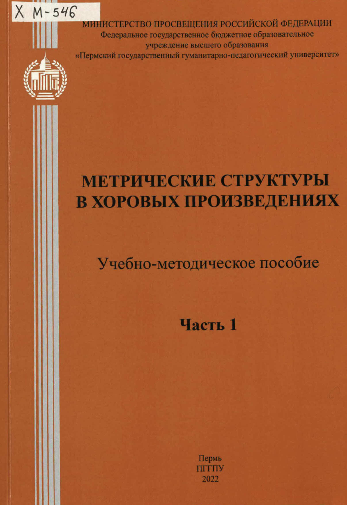
Метрические структуры в хоровых произведениях : учебно-методическое пособие / редакторы-составители: Л. В. Каплун, О. А. Махьянова ; Пермский государственный гуманитарно-педагогический университет.[Хоровая партитура].Пермь : ПГГПУ, 2022-
Часть 1.[Хоровая партитура].Пермь : ПГГПУ, 2022.81 с.
Чит. з., Хран. Х М-546
Чит. з., Хран. Х М-546
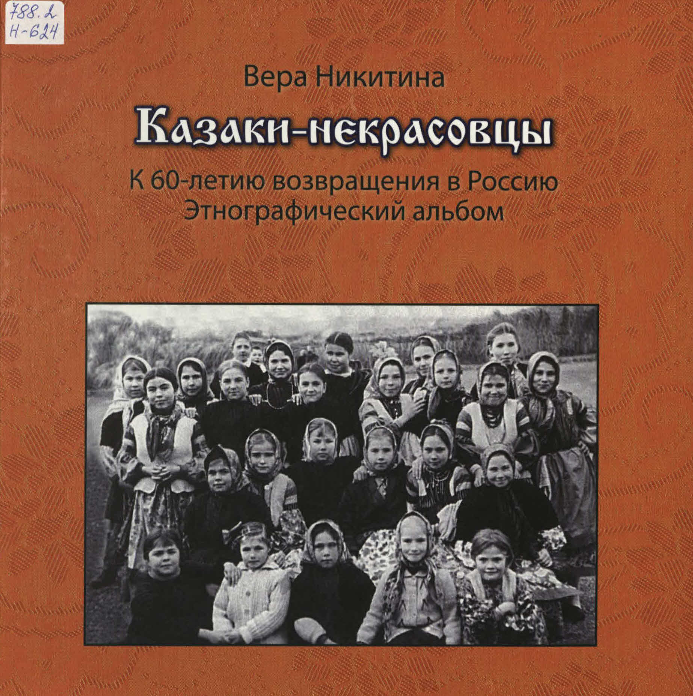
Никитина, Вера Николаевна.
Казаки-некрасовцы : к 60-летию возвращения в Россию : этнографический альбом : [в 2 т.] / Вера Никитина.Москва : [б. и.], 2022 (Москва : Центр полиграфических услуг "Радуга", 2022) Т. 2 / Вера Никитина.2022.307 с. : ил., фот. + CD
Чит. з. 788.2 Н-624
Казаки-некрасовцы : к 60-летию возвращения в Россию : этнографический альбом : [в 2 т.] / Вера Никитина.Москва : [б. и.], 2022 (Москва : Центр полиграфических услуг "Радуга", 2022) Т. 2 / Вера Никитина.2022.307 с. : ил., фот. + CD
Чит. з. 788.2 Н-624
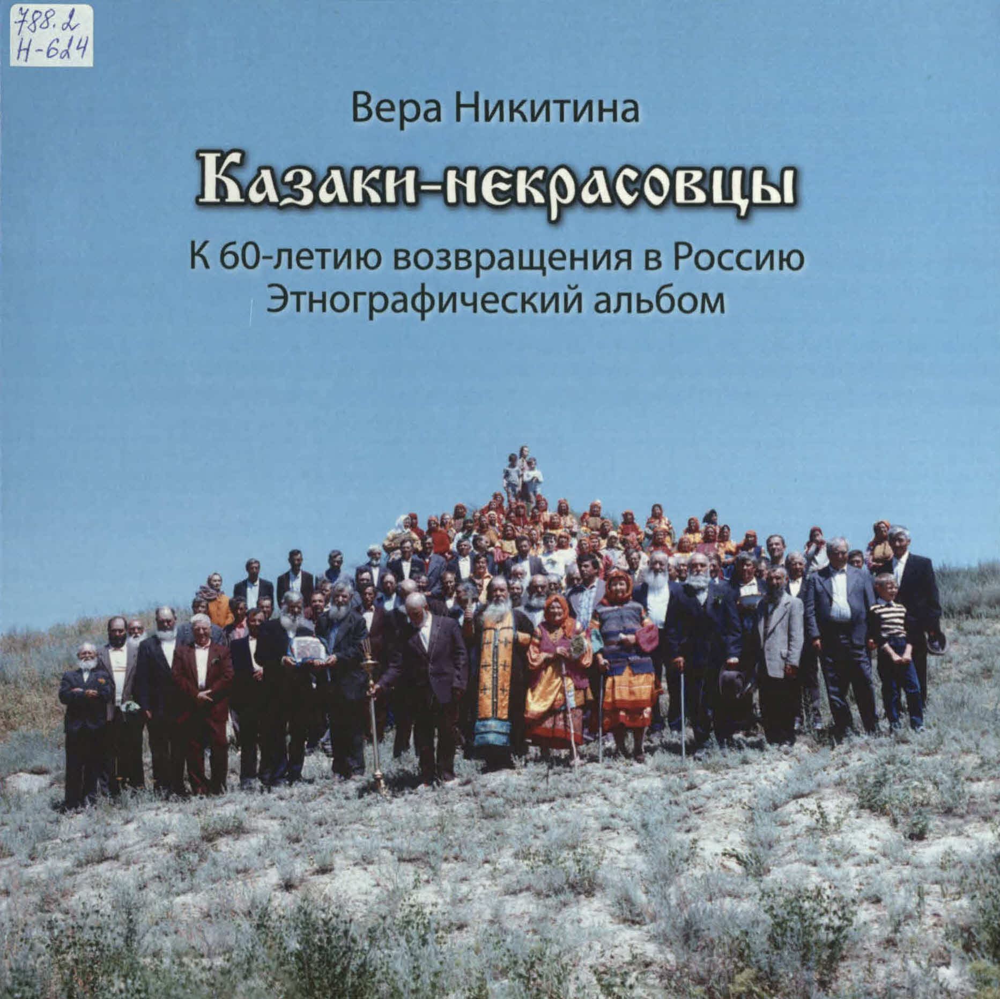
Никитина, Вера Николаевна.
Казаки-некрасовцы : к 60-летию возвращения в Россию : этнографический альбом : [в 2 т.] / Вера Никитина.Москва : [б. и.], 2022 (Москва : Центр полиграфических услуг "Радуга", 2022) Т. 2 / Вера Никитина.2022.318, [1] с. : ил., фот., цв. ил. + DVD Крат. библиогр.: с.294-298.Краткое содержание на англ. и турец. яз.
Чит. з. 788.2 Н-624
Казаки-некрасовцы : к 60-летию возвращения в Россию : этнографический альбом : [в 2 т.] / Вера Никитина.Москва : [б. и.], 2022 (Москва : Центр полиграфических услуг "Радуга", 2022) Т. 2 / Вера Никитина.2022.318, [1] с. : ил., фот., цв. ил. + DVD Крат. библиогр.: с.294-298.Краткое содержание на англ. и турец. яз.
Чит. з. 788.2 Н-624
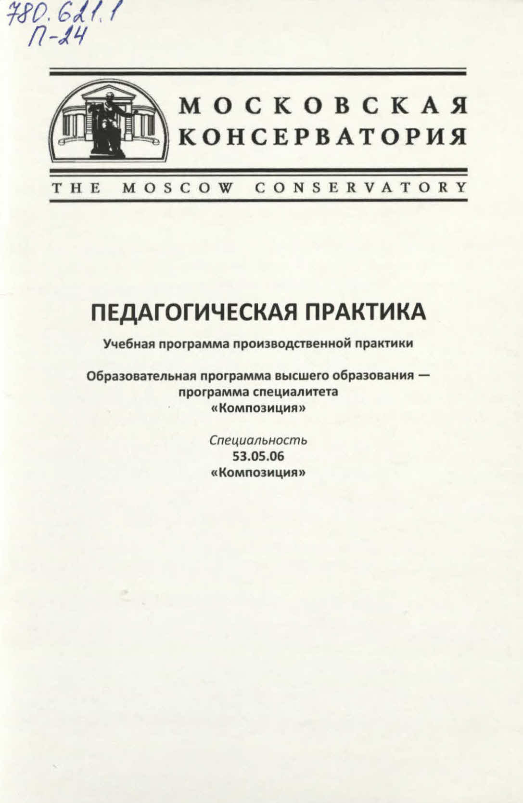
Педагогическая практика : учебная программа производственной практики : специальность 53.05.06 "Композиция" / разраб. Л.А. Джумановой, А.В. Комиссаренко; Московская консерватория. Научно-композиторский факультет.Москва : Научно-издательский центр "Московская консерватория", 2023.24, [3] с. : табл.
Библиогр.: с. 15-21.Прил.
Абон., ИБО, Хран., Чит. з. 780.621.1 П-24
Абон., ИБО, Хран., Чит. з. 780.621.1 П-24
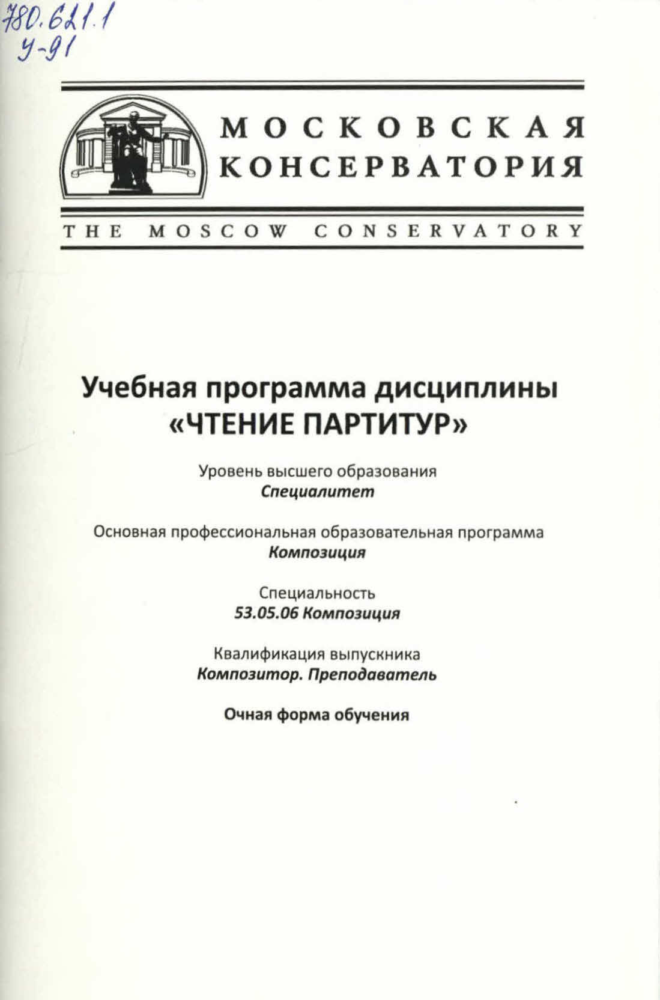
Учебная программа дисциплины "Чтение партитур" : уровень высшего образования : специальность 53.05.06 Композиция / разраб. С.В. Голубковым; Московская консерватория; Кафедра инструментовки.Москва : Научно-издательский центр "Московская консерватория", 2023.46, [1] с. : табл.
Библиогр.: с. 43-46.
Абон., ИБО, Хран., Чит. з. 780.621.1 У-91
Абон., ИБО, Хран., Чит. з. 780.621.1 У-91
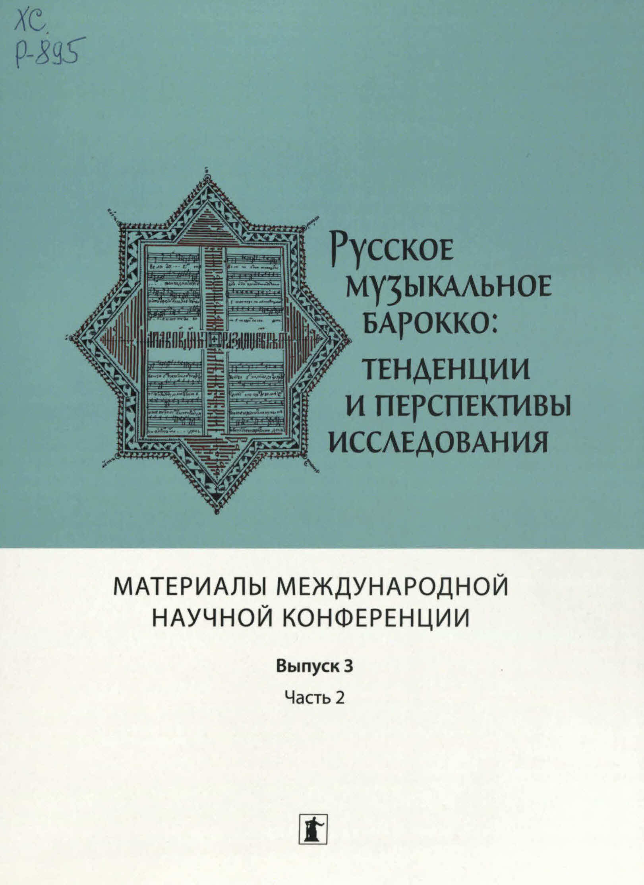
Русское музыкальное барокко : тенденции и перспективы исследования : материалы междунар. науч. конференции (18-19 ноября 2019 г.).Москва : Государственный институт искусствознания (ГИИ), 2016-
Вып. 3, ч. 2: Нотные материалы / ред.-сост. Н.Ю. Плотникова; муз. ред. С.М. Мовчан.Москва : Научно-издательский центр "Московская консерватория", 2023.79 c.
Хран., Чит. з., Абон. ХС Р-895
Хран., Чит. з., Абон. ХС Р-895
 Булошников, Марк Леонидович.
Булошников, Марк Леонидович.Метафорический стиль Валентина Сильвестрова / Марк Булошников.Санкт-Петербург : Jaromir Hladik press, 2022.205, [2] с. : нот. Примеч.: с. 189-206.Изд. осущ. при поддержке кн. дистриб.: "Медленные книги", Дома творчества "Переделкино".
Чит. з. 785.1 Б-907
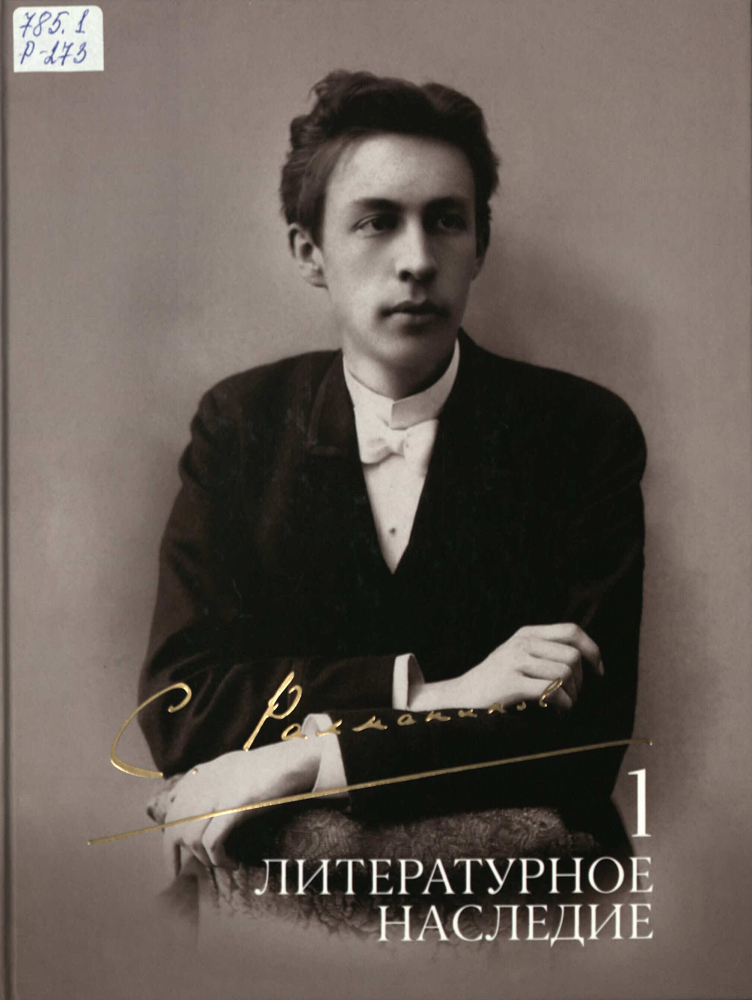
Рахманинов, Сергей Васильевич.
Литературное наследие : в 3 т. / С. Рахманинов; сост.-ред., авт. вступит. ст., коммент., указ. З.А. Апетян; Российский национальный музей музыки .- Изд. 2-е, испр. и доп.Москва : Музыка, 2023 Т. 1: Воспоминания ; Статьи ; Интервью ; Письма.2023.604, [1] с., [12] л. ил. : фот., портр., ил. Письма за период 1890-1909 г.; коммент.: с.429-590. I
Абон., Чит. з. 785.1 Р-273
Литературное наследие : в 3 т. / С. Рахманинов; сост.-ред., авт. вступит. ст., коммент., указ. З.А. Апетян; Российский национальный музей музыки .- Изд. 2-е, испр. и доп.Москва : Музыка, 2023 Т. 1: Воспоминания ; Статьи ; Интервью ; Письма.2023.604, [1] с., [12] л. ил. : фот., портр., ил. Письма за период 1890-1909 г.; коммент.: с.429-590. I
Абон., Чит. з. 785.1 Р-273
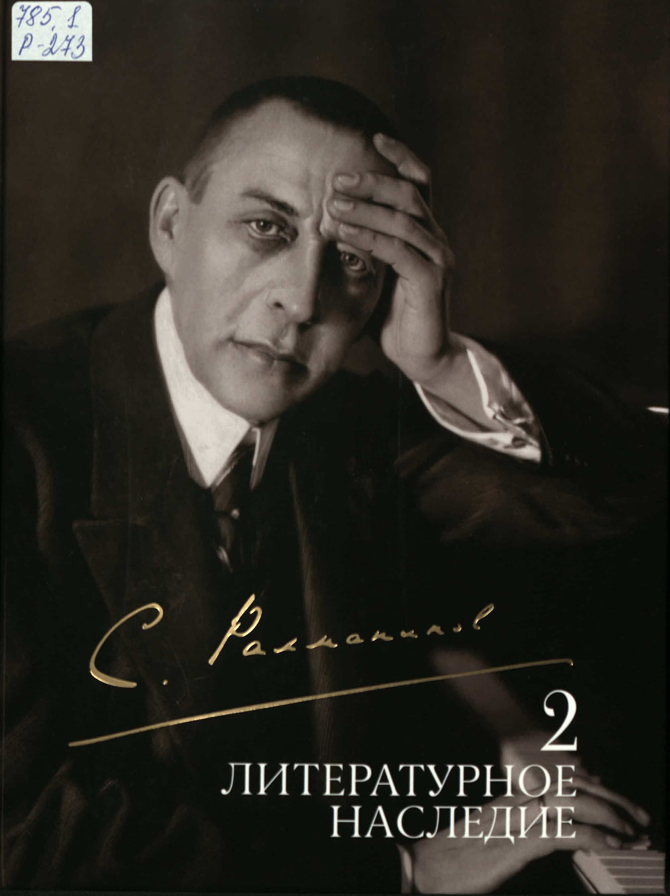
Рахманинов, Сергей Васильевич.
Литературное наследие : в 3 т. / С. Рахманинов; сост.-ред., авт. вступит. ст., коммент., указ. З.А. Апетян; Российский национальный музей музыки .- Изд. 2-е, испр. и доп.Москва : Музыка, 2023 Т. 2: Письма.2023.582, [1] с., [12] л. ил. : фот., портр., ил. Письма за период 1910-1933 г.; коммент.: с. 343-567.
Абон., Чит. з. 785.1 Р-273
Литературное наследие : в 3 т. / С. Рахманинов; сост.-ред., авт. вступит. ст., коммент., указ. З.А. Апетян; Российский национальный музей музыки .- Изд. 2-е, испр. и доп.Москва : Музыка, 2023 Т. 2: Письма.2023.582, [1] с., [12] л. ил. : фот., портр., ил. Письма за период 1910-1933 г.; коммент.: с. 343-567.
Абон., Чит. з. 785.1 Р-273
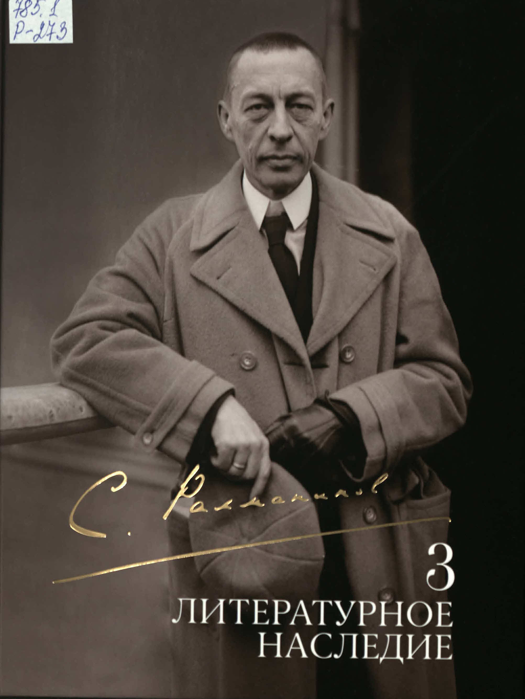
Рахманинов, Сергей Васильевич.
Литературное наследие : в 3 т. / С. Рахманинов; сост.-ред., авт. вступит. ст., коммент., указ. З.А. Апетян; Российский национальный музей музыки .- Изд. 2-е, испр. и доп.Москва : Музыка, 2023 Т. 3: Письма.2023.616, [1] с., [8] л. ил. : фот., портр., ил., нот. Письма за период 1934-1943 г.; коммент.: с. 223-430; прил.: с. 433-604.
Абон., Чит. з. 785.1 Р-273
Литературное наследие : в 3 т. / С. Рахманинов; сост.-ред., авт. вступит. ст., коммент., указ. З.А. Апетян; Российский национальный музей музыки .- Изд. 2-е, испр. и доп.Москва : Музыка, 2023 Т. 3: Письма.2023.616, [1] с., [8] л. ил. : фот., портр., ил., нот. Письма за период 1934-1943 г.; коммент.: с. 223-430; прил.: с. 433-604.
Абон., Чит. з. 785.1 Р-273
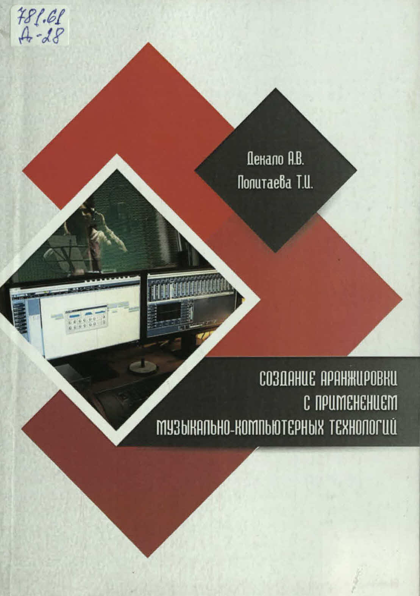
Декало, А.В.
Создание аранжировки с применением музыкально-компьютерных технологий : учебно-методическое пособие / Декало А.В., Политаева Т.И.; Башкирский государственный педагогический университет имени М. Акмуллы".Уфа : Аэтерна, 2023.65 с. : ил. Библиогр.: с. 61-65.
Чит. з. 781.61 Д-28, 789.31 Д-28
Создание аранжировки с применением музыкально-компьютерных технологий : учебно-методическое пособие / Декало А.В., Политаева Т.И.; Башкирский государственный педагогический университет имени М. Акмуллы".Уфа : Аэтерна, 2023.65 с. : ил. Библиогр.: с. 61-65.
Чит. з. 781.61 Д-28, 789.31 Д-28
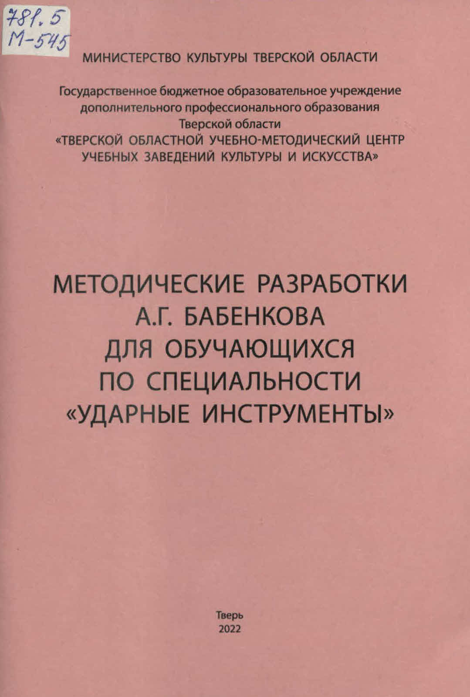
Методические разработки А.Г. Бабенкова для обучающихся по специальности "Ударные инструменты" / Тверской областной учебно-методический центр учебных заведений культуры и искусства.Тверь : Изд-во "Триада", 2022.47 с. : ил., портр., фот.
Библиогр.: с. 17-21.Об авт.
Чит. з. 781.5 М-545
Чит. з. 781.5 М-545
 Российские педагогические ассамблеи искусств в Магнитогорске ; Межкультурный диалог в искусстве и художественном образовании : сборник докладов Всероссийской научно-практической конференции, 22-25 ноября 2022 г. / редкол.: Г.Е. Гун (сост.), И. Л. Пивоварова [и др.].Магнитогорск : Магнитогорская государственная консерватория (академия) имени М.И. Глинки, 2022.208 с. : ил., фот., нот.
Российские педагогические ассамблеи искусств в Магнитогорске ; Межкультурный диалог в искусстве и художественном образовании : сборник докладов Всероссийской научно-практической конференции, 22-25 ноября 2022 г. / редкол.: Г.Е. Гун (сост.), И. Л. Пивоварова [и др.].Магнитогорск : Магнитогорская государственная консерватория (академия) имени М.И. Глинки, 2022.208 с. : ил., фот., нот.Чит. з. 780.8 Р-764
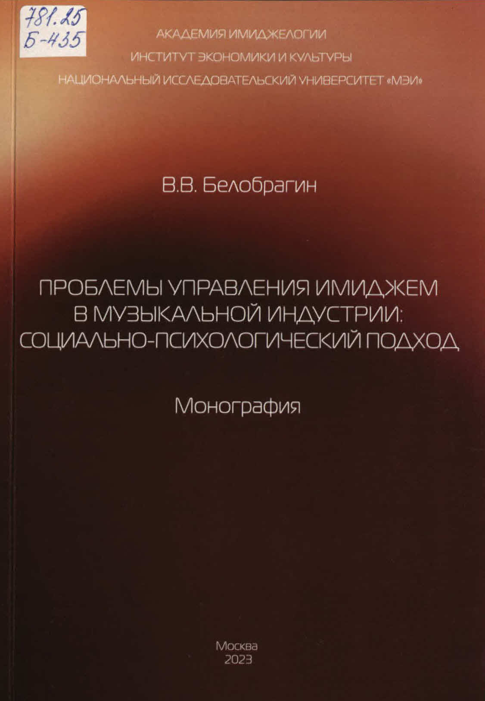
Белобрагин, Виталий Викторович.
Проблемы управления имиджем в музыкальной индустрии: социально-психологический подход : монография / В.В. Белобрагин; Национальный исследовательский университет "МЭИ", Кафедра философии, политологии, социологии имени Г.С. Арефьевой.Москва : Голос-Пресс, 2023.90 с.
ОХЛ, Чит. з. 88 Б-43, 781.25 Б-435
Проблемы управления имиджем в музыкальной индустрии: социально-психологический подход : монография / В.В. Белобрагин; Национальный исследовательский университет "МЭИ", Кафедра философии, политологии, социологии имени Г.С. Арефьевой.Москва : Голос-Пресс, 2023.90 с.
ОХЛ, Чит. з. 88 Б-43, 781.25 Б-435
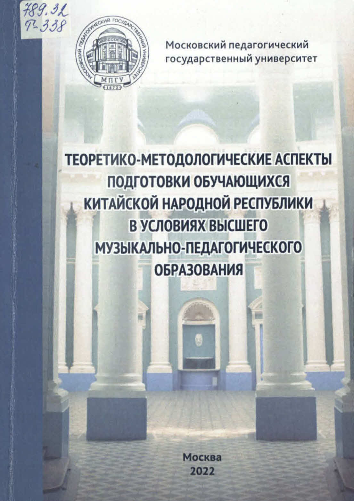
Теоретико-методологические аспекты подготовки обучающихся Китайской Народной Республики в условиях высшего музыкально-педагогического образования : монография / А. А. Коновалов [и др.] ; отв. ред. Е. П. Красовская; Московский педагогический государственный университет.Москва : МПГУ, 2022.250, [1] с. : портр., табл.
Библиогр.: с. 218-239 (251 назв.).Свед. об авт.: с. 240-251.
Чит. з. 789.32 Т-338
Чит. з. 789.32 Т-338
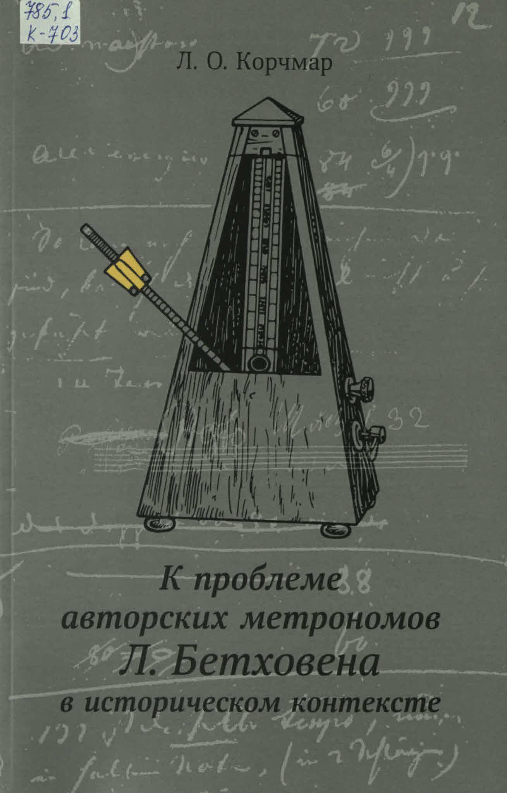
Корчмар, Леонид Овшиевич.
К проблеме авторских метрономов Л. Бетховена в историческом контексте : учебное пособие по дисциплине оперно-симфоническое дирижирование / Л.О. Корчмар, Санкт-Петербургская консерватория. Кафедра оперно-симфонического дирижирования.Санкт-Петербург; Саратов : Амирит, 2022.165 с. : ил., нот., фот. Прил.: с. 144-163.Библиогр.: с. 164-165.
Абон., Чит. з. 785.1 К-703
К проблеме авторских метрономов Л. Бетховена в историческом контексте : учебное пособие по дисциплине оперно-симфоническое дирижирование / Л.О. Корчмар, Санкт-Петербургская консерватория. Кафедра оперно-симфонического дирижирования.Санкт-Петербург; Саратов : Амирит, 2022.165 с. : ил., нот., фот. Прил.: с. 144-163.Библиогр.: с. 164-165.
Абон., Чит. з. 785.1 К-703
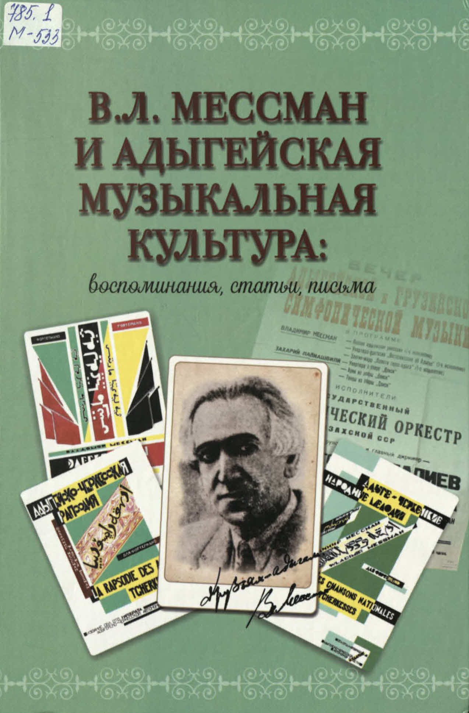
В. Л. Мессман и адыгейская музыкальная культура : воспоминания, статьи, письма : [к 100-летию государственности Адыгеи] / [В.Л. Мессман; составление, подготовка текстов, научное редактирование, биографический очерк, комментарии Г. Б. Луганской]; Адыгейский республиканский институт гуманитарных исследований имени Т. М. Керашева.Майкоп : ОАО "Полиграф-Юг", 2022.288 с. : ил., нот., портр., цв. ил.
Библиогр.: с. 266-271.
Чит. з. 785.1 М-533
Чит. з. 785.1 М-533
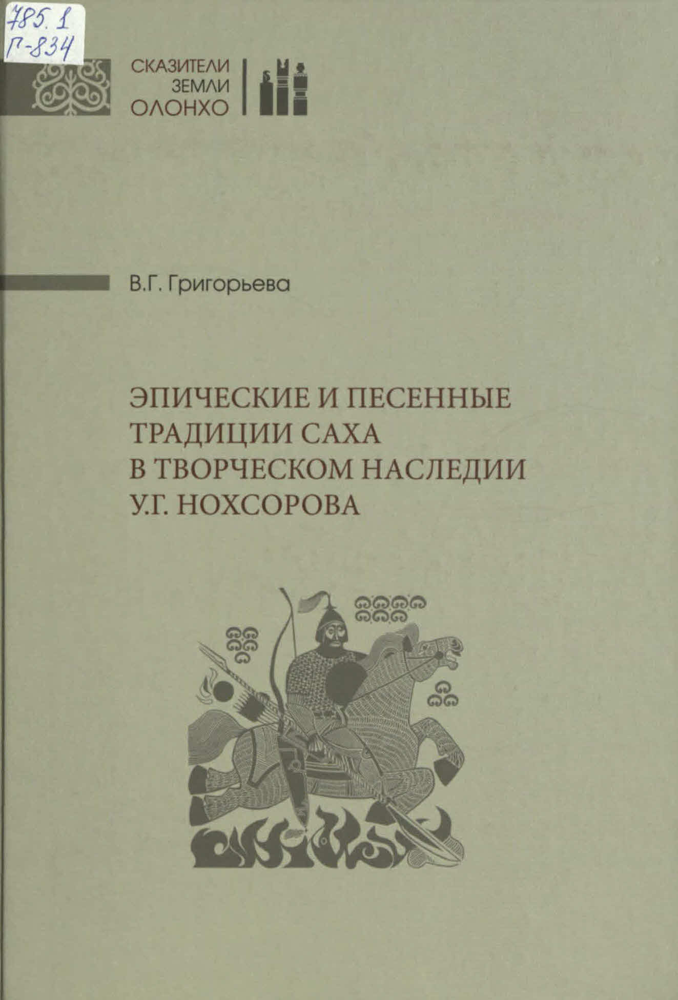
Эпические и песенные традиции саха в творческом наследии У.Г. Нохсорова / В.Г. Григорьева, под общ. ред. О.Э. Добжанской; отв. за вып. С.С. Игнатьева; Институт гуманитарных исследований и проблем малочисленных народов севера Сибирского отделения РАН.Новосибирск : Наука, 2023.254, [1] с., [5] л. ил. : нот., ил., фот., цв. ил.(Сказители земли Олонхо ; вып. 2).
Библиогр.: с. 245-255.Прил.
Чит. з. 785.1 Г-834
Чит. з. 785.1 Г-834
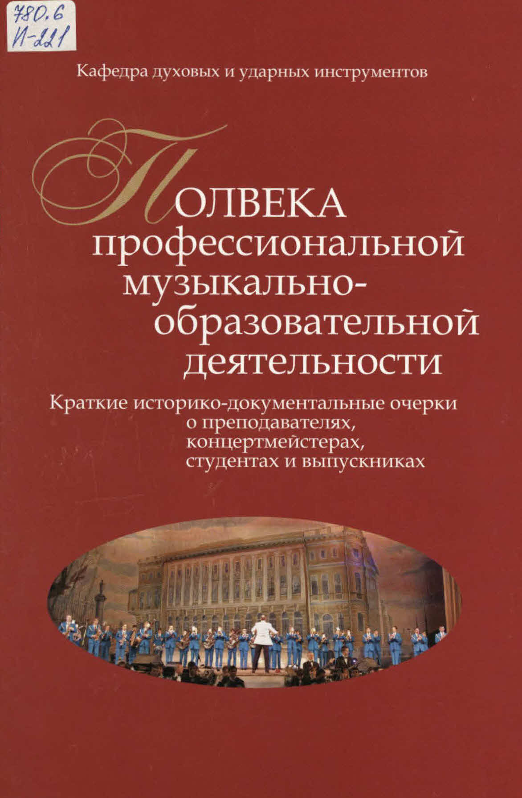
Полвека профессиональной музыкально-образовательной деятельности : краткие историко-документальные очерки о преподавателях, концертмейстерах, студентах и выпускниках / автор-составитель В. А. Ивановский; Санкт-Петербургский государственный институт культуры, Факультет искусств, Кафедра духовых и ударных инструментов.Санкт-Петербург : СПбГИК, 2022.135 с. : ил., цв. ил.
ИБО, Чит. з. 780.6 И-221
ИБО, Чит. з. 780.6 И-221
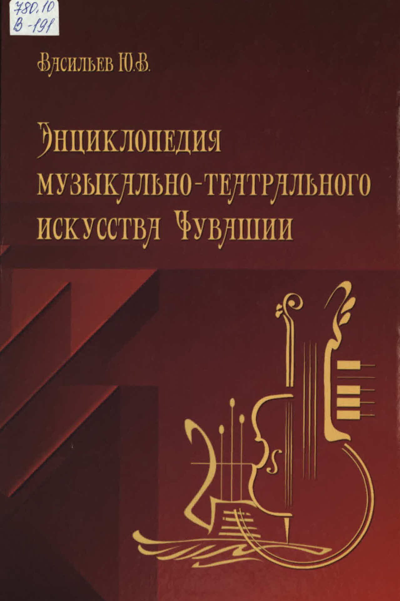
Васильев, Юрий Васильевич (дирижёр).
Энциклопедия музыкально-театрального искусства Чувашии / Ю.В. Васильев; науч. ред. Л.И. Бушуева.Чебоксары : Чуваш. кн. изд-во, 2022.382, [1] с. Предисл. от авт., прил.
ИБО, Чит. з. 780.10 В-191, 784.312 В-191
Энциклопедия музыкально-театрального искусства Чувашии / Ю.В. Васильев; науч. ред. Л.И. Бушуева.Чебоксары : Чуваш. кн. изд-во, 2022.382, [1] с. Предисл. от авт., прил.
ИБО, Чит. з. 780.10 В-191, 784.312 В-191
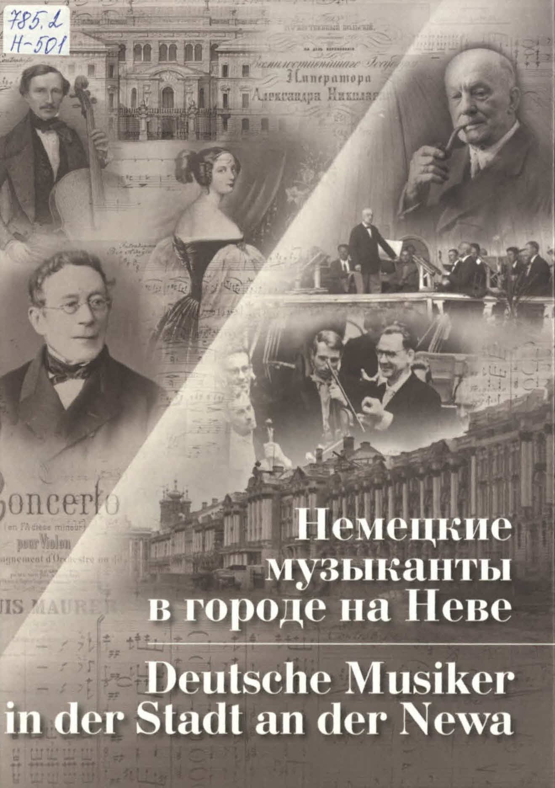
Немецкие музыканты в городе на Неве = Deutsche Musiker in der Stadt an der Newa : сборник авторских статей о малоизвестных страницах петербургской музыкальной культуры / отв. ред. и сост. Л. В. Попкова, науч. конс. сб. В.А. Гуревич, пер. на нем. яз. К.Нееф, И. Сантовски, М. Бунковски; пер. на рус. яз. В. Гуревич, Л. Попкова.Санкт-Петербург : Келлер, 2022.367 с. : ил., портр.
Текст на рус., нем. яз.
Чит. з. 785.2 Н-501
Чит. з. 785.2 Н-501
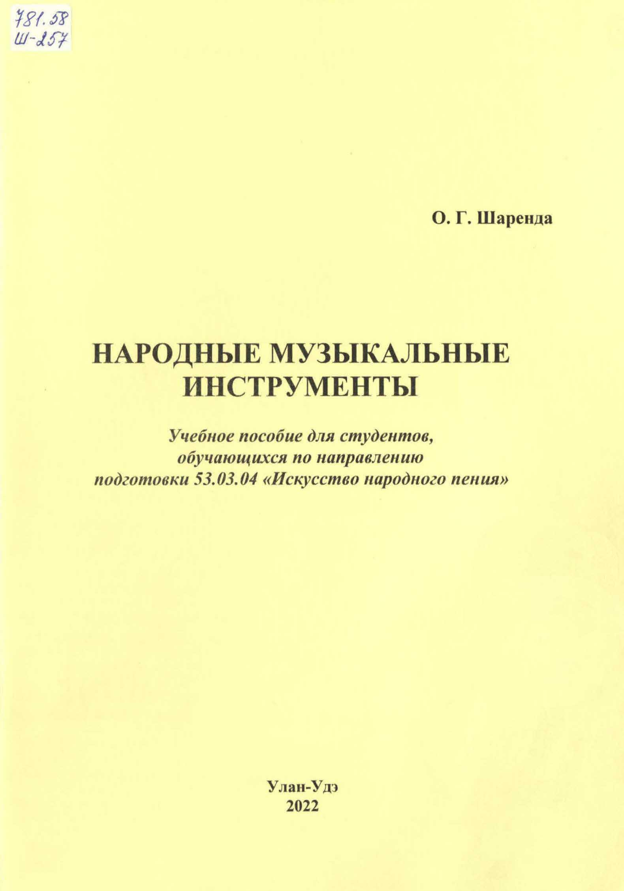
Шаренда, Олег Геннадьевич.
Народные музыкальные нструменты : учебное пособие для студентов, обучающихся по направлению подготовки 53.03.04 "Искусство народного пения" / О. Г. Шаренда ; Восточно-Сибирский государственный институт культуры.Улан-Удэ : Издательско-полиграфический комплекс ФГБОУ ВО ВСГИК, 2022.55, [1] с. : ил., нот. Библиогр.: с. 55.
Чит. з. 781.58 Ш-257
Народные музыкальные нструменты : учебное пособие для студентов, обучающихся по направлению подготовки 53.03.04 "Искусство народного пения" / О. Г. Шаренда ; Восточно-Сибирский государственный институт культуры.Улан-Удэ : Издательско-полиграфический комплекс ФГБОУ ВО ВСГИК, 2022.55, [1] с. : ил., нот. Библиогр.: с. 55.
Чит. з. 781.58 Ш-257
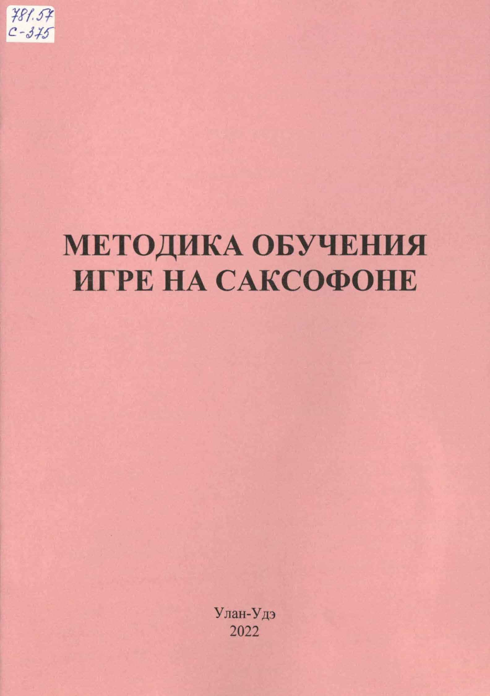
Методика обучения игре на саксофоне : методические рекомендации для студентов, обучающихся по направлению подготовки 53.03.01 "Музыкальное искусство эстрады" / авт.-сост. В. А. Симонов; Восточно-Сибирский государственный институт культуры.Улан-Удэ : Издательско-полиграфический комплекс ФГБОУ ВО ВСГИК, 2022.31 с. : ил., нот.
Библиогр.: с. 22-24 (25 назв.).
Чит. з. 781.57 С-375
Чит. з. 781.57 С-375
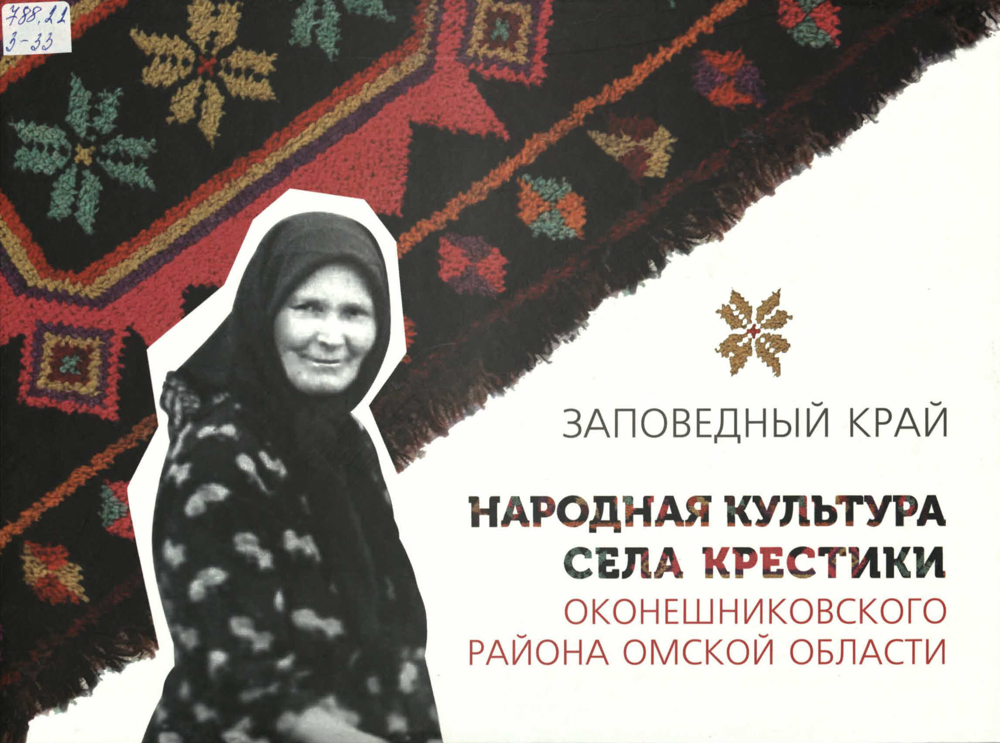
Заповедный край : народная культура села Крестики Оконешниковского района Омской области : [монография] / Е. Я. Аркин [и др.] ; науч. ред. Н. К. Козлова; Омская региональная общественная организация "Центр славянских традиций".Омск : Типография "Золотой тираж" (Омскбланкиздата), 2022.207 с. : ил., цв. ил., нот.
Чит. з. 788.22 З-33
Чит. з. 788.22 З-33
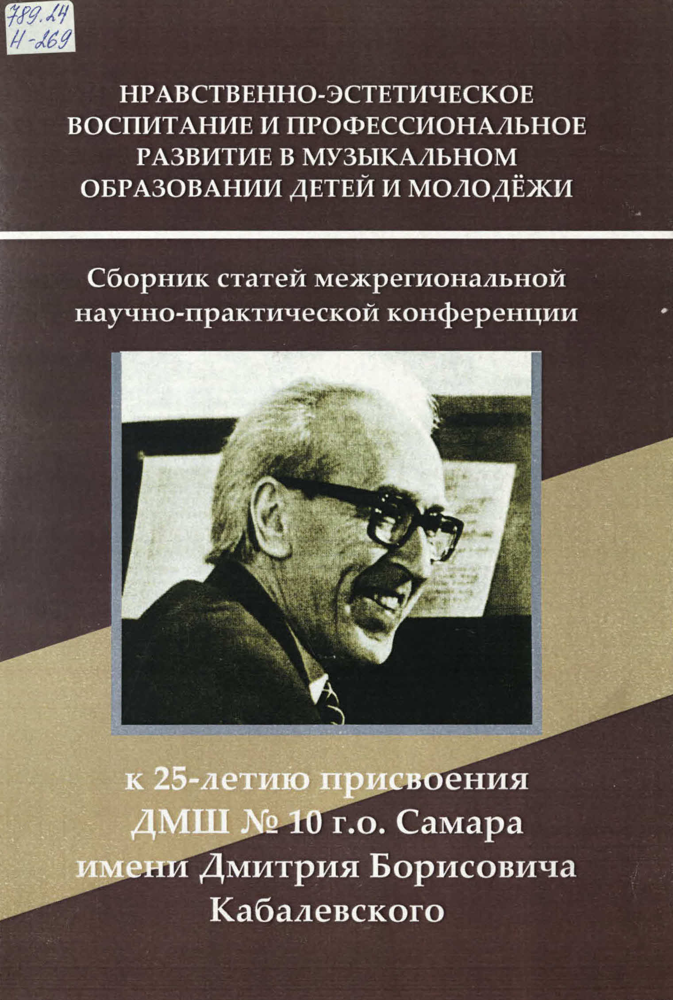
Нравственно-эстетическое воспитание и профессиональное развитие в музыкальном образовании детей и молодёжи : материалы межрегю научю-практю конференции, посвящённой 25-летию присвоения ДМШ № 10 г. о. Самара имени Д. Б. Кабалевского / [ред.-сост. А. В. Лазанчина]; Детская музыкальная школа имени Д. Б. Кабалевского.Самара : Инсома-пресс, 2022.291 с., [1] л. цв. ил. : ил., нот.
Чит. з. 789.24 Н-269, 780.8 Н-269
Чит. з. 789.24 Н-269, 780.8 Н-269
Ноты
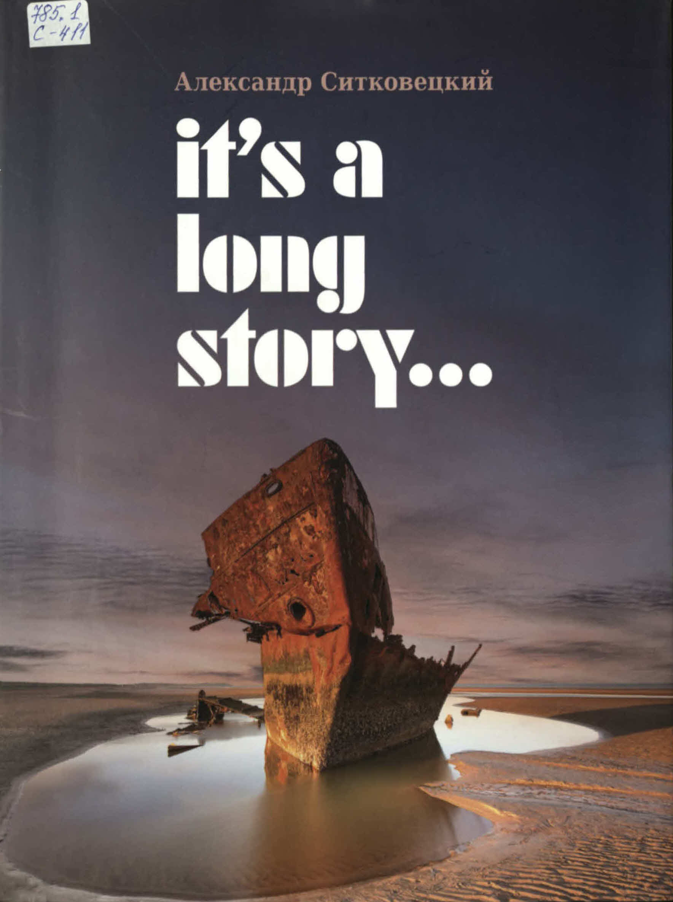
Ситковецкий, Александр Витальевич.
It's a Long story.. / А.В. Ситковецкий.Москва : Бослен, 2023.375 с. : суперобложка : ил., фот., портр., цв. ил.
Чит. з. 785.1 С-411
It's a Long story.. / А.В. Ситковецкий.Москва : Бослен, 2023.375 с. : суперобложка : ил., фот., портр., цв. ил.
Чит. з. 785.1 С-411
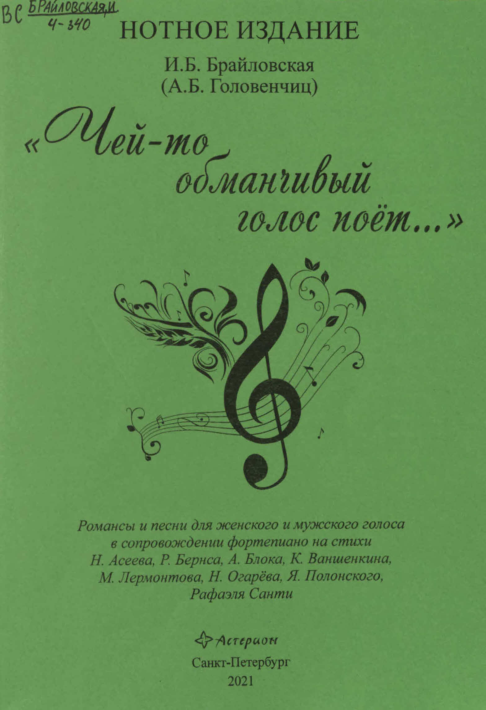
Брайловская, Ирина Борисовна.
Чей-то обманчивый голос поёт.. : романсы и песни для женского и мужского голоса в сопровождении фортепиано / И. Б. Брайловская (А. Б. Головенчиц); на стихи Н. Асеева, Р. Бернса, А. Блока, К. Ваншенкина, М. Лермонтова, Н. Огарёва, Я. Полонского, Рафаэля Санти.Санкт-Петербург : Астерион, 2021.38 с.
Чит. з. ВС Ч-340
Чей-то обманчивый голос поёт.. : романсы и песни для женского и мужского голоса в сопровождении фортепиано / И. Б. Брайловская (А. Б. Головенчиц); на стихи Н. Асеева, Р. Бернса, А. Блока, К. Ваншенкина, М. Лермонтова, Н. Огарёва, Я. Полонского, Рафаэля Санти.Санкт-Петербург : Астерион, 2021.38 с.
Чит. з. ВС Ч-340
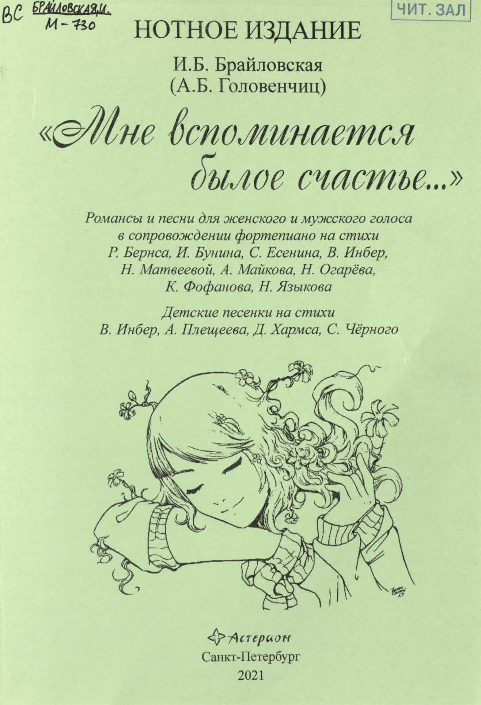
Брайловская, Ирина Борисовна.
Мне вспоминается былое счастье.. : романсы и песни для женского и мужского голоса в сопровождении фортепиано / И. Б. Брайловская (А. Б. Головенчиц) ; на стихи Р. Бернса, И. Бунина, С. Есенина, В. Инбер, Н. Матвеевой, А. Майкова, Н. Огарёва и др.; редакторы: И. Пеева, В. Щербина.СПб : Астерион, 2021.58 с.
Чит. з. ВС М-730
Мне вспоминается былое счастье.. : романсы и песни для женского и мужского голоса в сопровождении фортепиано / И. Б. Брайловская (А. Б. Головенчиц) ; на стихи Р. Бернса, И. Бунина, С. Есенина, В. Инбер, Н. Матвеевой, А. Майкова, Н. Огарёва и др.; редакторы: И. Пеева, В. Щербина.СПб : Астерион, 2021.58 с.
Чит. з. ВС М-730
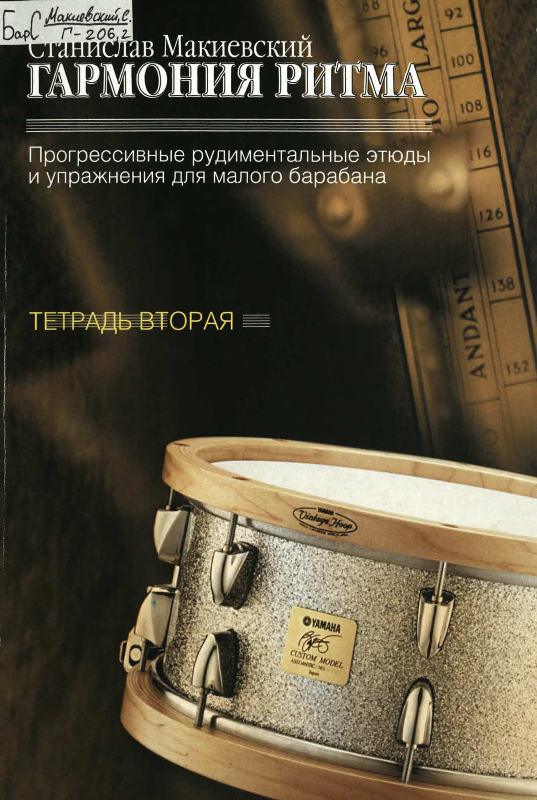
Макиевский, Станислав Александрович.
Гармония ритма : прогрессивные рудиментальные этюды и упражнения : для малого барабана / Станислав Макиевский.Москва : Маска, 2020 БарС Г-206 Тетр. 2.2020.83 с.
Чит. з. БарС Г-206
Гармония ритма : прогрессивные рудиментальные этюды и упражнения : для малого барабана / Станислав Макиевский.Москва : Маска, 2020 БарС Г-206 Тетр. 2.2020.83 с.
Чит. з. БарС Г-206
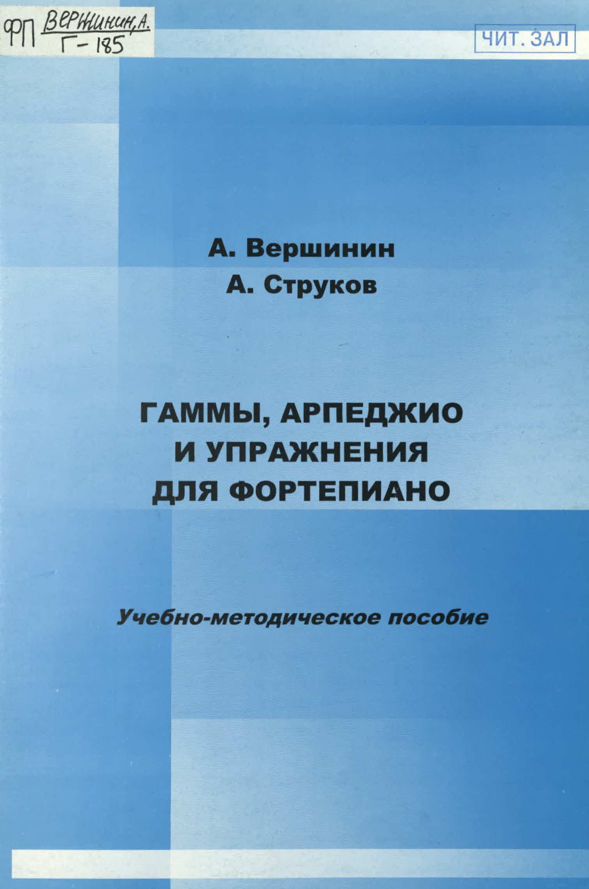
Вершинин, Александр Александрович.
Гаммы, арпеджио и упражнения для фортепиано : учебно-методическое пособие / А. Вершинин, А. Струков.Абакан : Изд-во ФГБОУ ВПО "Хакасский гос. ун-т им. Н. Ф. Катанова", 2021.92 с.
Чит. з. ФП Г-185
Гаммы, арпеджио и упражнения для фортепиано : учебно-методическое пособие / А. Вершинин, А. Струков.Абакан : Изд-во ФГБОУ ВПО "Хакасский гос. ун-т им. Н. Ф. Катанова", 2021.92 с.
Чит. з. ФП Г-185
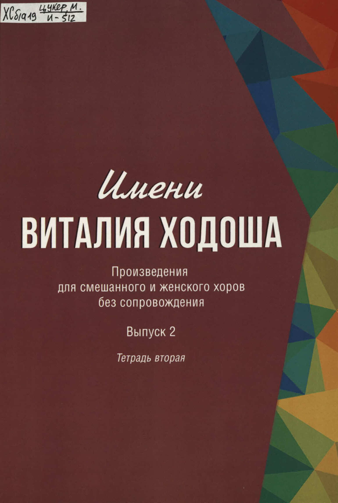
Имени Виталия Ходоша : произведения для смешанного и женского хоров без сопровождения : для хормейстеров, преподавателей кафедр хорового дирижирования музыкальных колледжей и вузов и др. / составитель А. М. Цукер ; редактор Э. Я. Ходош.Ростов-на-Дону : Ростовская государственная консерватория им. С. В. Рахманинова, 2018
Хран., Чит. з. ХС И-512
Хран., Чит. з. ХС И-512
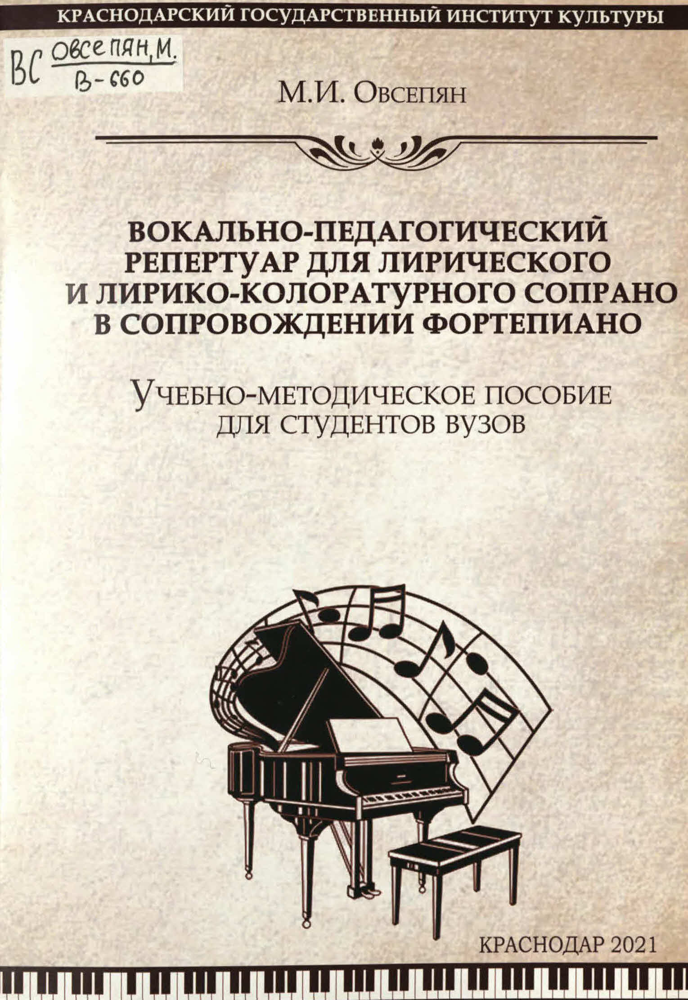
Овсепян , М. И.
Вокально-педагогический репертуар для лирического и лирико-колоратурного сопрано в сопровождении фортепиано : учебно-методическое пособие для студентов вузов / М.И. Овсепян.Краснодар : КГИК, 2021.55 с. Библ. с. 54.
Чит. з. ВС В-660
Вокально-педагогический репертуар для лирического и лирико-колоратурного сопрано в сопровождении фортепиано : учебно-методическое пособие для студентов вузов / М.И. Овсепян.Краснодар : КГИК, 2021.55 с. Библ. с. 54.
Чит. з. ВС В-660
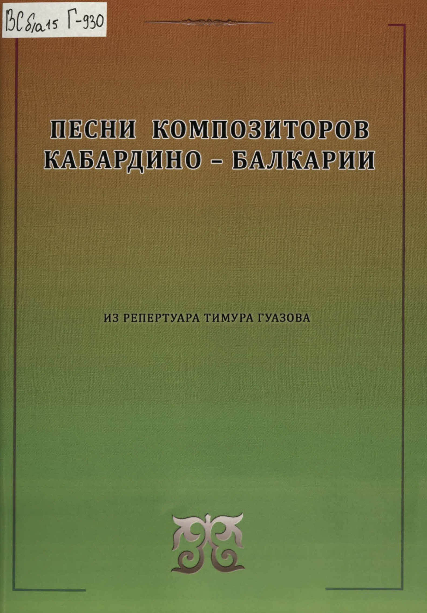
Песни композиторов Кабардино-Балкарии : из репертуара Тимура Гуазова : [для голоса с сопровождением фортепиано] / сост. Т.А. Гуазов; Северо-Кавказский государственный институт искусств.Нальчик : Принт Центр, 2021.63, [1] с.
Крат. сведения о композиторах в предисл. от сост.Тит. л., обл., предисл. рус. Сведения перед нот. текстом и лит. текст рус., кабар.
Хран., Чит. з. ВС П-282, ВСб/515 Г-930
Хран., Чит. з. ВС П-282, ВСб/515 Г-930
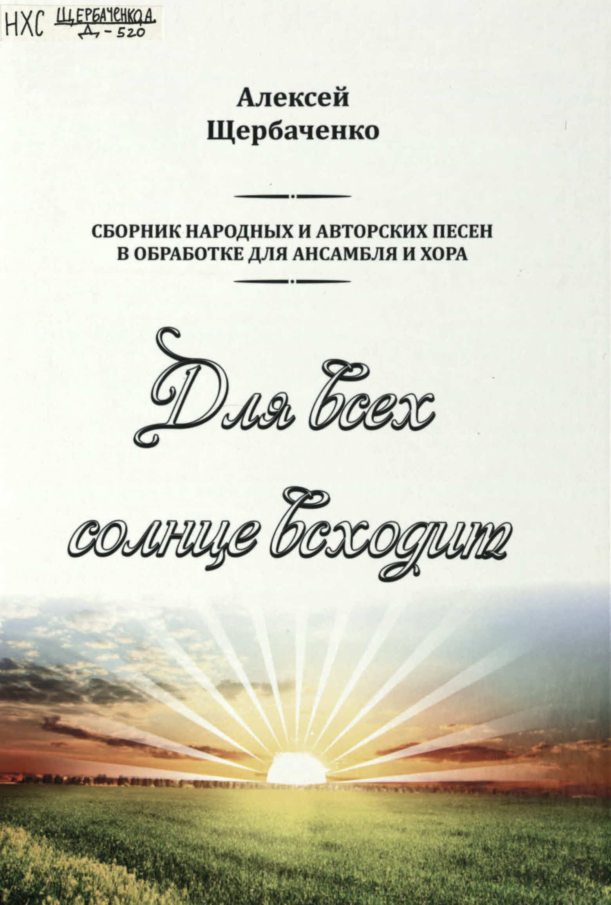
Щербаченко, Алексей Петрович.
Для всех солнце всходит : сборник народных и авторских песен в обработке для ансамбля и хора / Алексей Щербаченко.[Хоровая партитура].Саратов : Техно-Декор, 2022.151 с. : портр. Библиогр.: с. 151.
Чит. з. НХС Д-520
Для всех солнце всходит : сборник народных и авторских песен в обработке для ансамбля и хора / Алексей Щербаченко.[Хоровая партитура].Саратов : Техно-Декор, 2022.151 с. : портр. Библиогр.: с. 151.
Чит. з. НХС Д-520
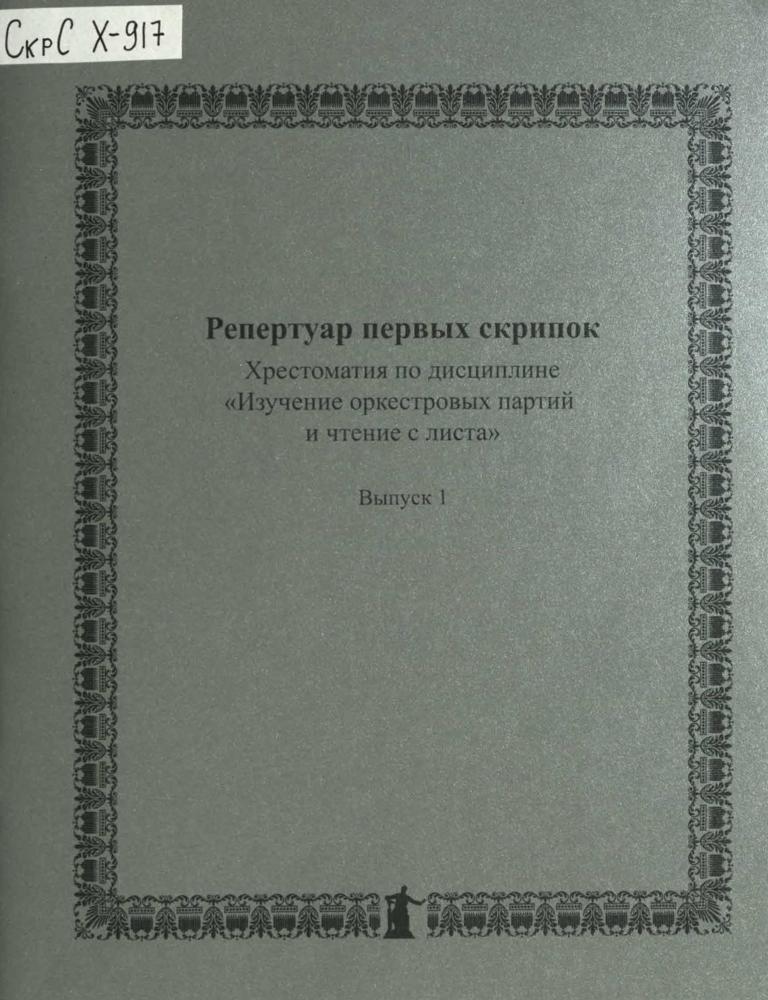
Репертуар первых скрипок : хрестоматия по дисциплине "Изучение оркестровых партий и чтение с листа" / редакторы составители: С. Г. Гиршенко, А. А. Гуляницкий.Москва : Научно-издательский центр "Московская консерватория", 2022-
Выпуск 1.[Партия скрипки].Москва : Научно-издательский центр "Московская консерватория", 2022-.59 с.
Чит. з., Хран., Абон. СкрС Х-917
Чит. з., Хран., Абон. СкрС Х-917
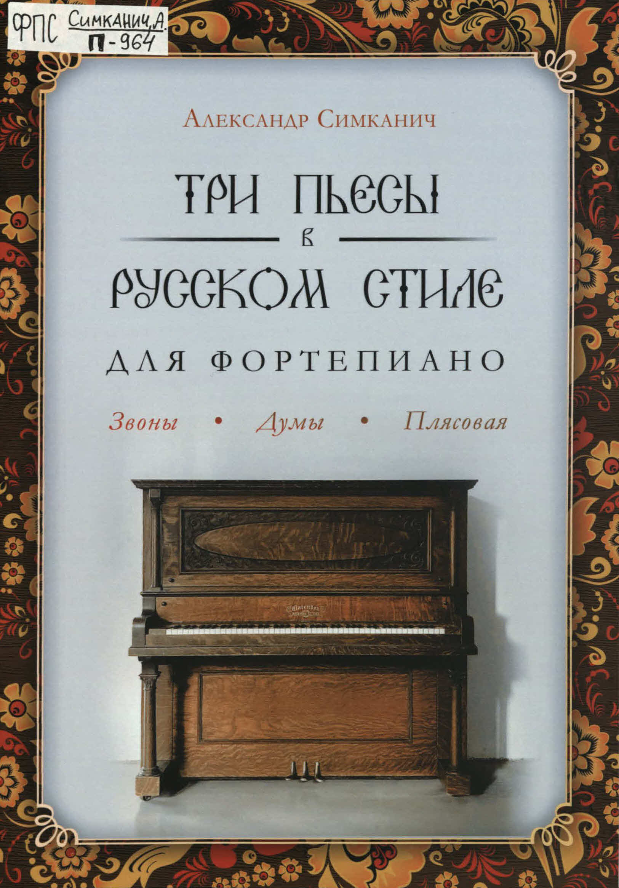
Симканич, Александр Сергеевич.
Три пьесы в русском стиле : для фортепиано / Александр Симканич.Москва : Эдитус, 2022.11 с.
Чит. з., Хран. ФПС П-964
Три пьесы в русском стиле : для фортепиано / Александр Симканич.Москва : Эдитус, 2022.11 с.
Чит. з., Хран. ФПС П-964
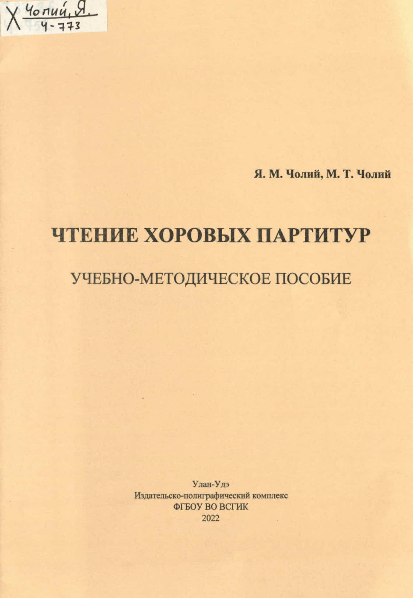
Чолий, Ярослав Михайлович.
Чтение хоровых партитур : учебно-методическое пособие / Я. М. Чолий, М. Т. Чолий ; Восточно-Сибирский государственный институт культуры.[Хоровая партитура].Улан-Удэ : Издательско-полиграфический комплекс ФГБОУ ВО ВСГИК, 2022.31 с. Библиогр.: с. 31.
Чит. з. Х Ч-773
Чтение хоровых партитур : учебно-методическое пособие / Я. М. Чолий, М. Т. Чолий ; Восточно-Сибирский государственный институт культуры.[Хоровая партитура].Улан-Удэ : Издательско-полиграфический комплекс ФГБОУ ВО ВСГИК, 2022.31 с. Библиогр.: с. 31.
Чит. з. Х Ч-773
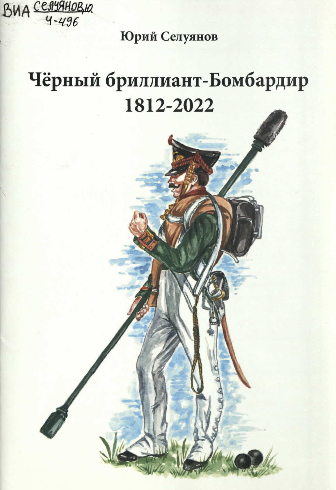
Селуянов, Юрий Павлович.
Чёрный бриллиант-Бомбардир 1812-2022 : партитура, текст песни / Юрий Селуянов.[Партии].Москва : Перо, 2022.18 парт. (55 с.в общ. паг.) : цв. ил. На тит. л.: В дар армии РФ.
Чит. з., Хран. ВИА Ч-496
Чёрный бриллиант-Бомбардир 1812-2022 : партитура, текст песни / Юрий Селуянов.[Партии].Москва : Перо, 2022.18 парт. (55 с.в общ. паг.) : цв. ил. На тит. л.: В дар армии РФ.
Чит. з., Хран. ВИА Ч-496
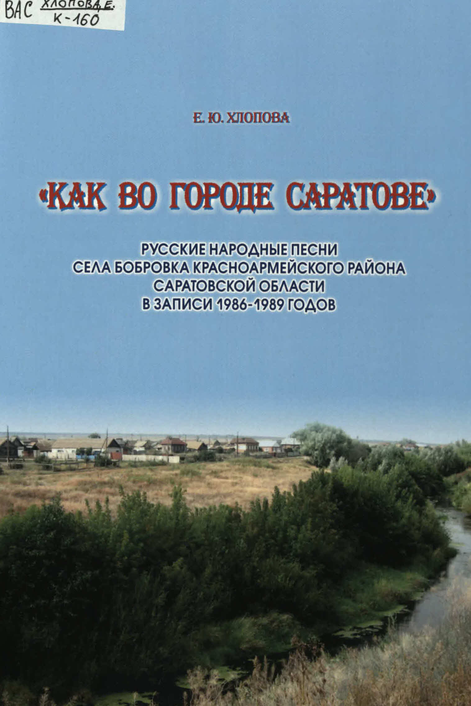
Хлопова, Елена Юрьевна.
Как во городе Саратове : русские народные песни села Бобровка Красноармейского района Саратовской области в записи 1986-1989 годов : [для народного вокального ансамбля без сопровождения] / Е. Ю. Хлопова ; вступительная статья Соболевой Т. П.Саратов : Техно-Декор, 2022.114 с. : С цвет. ил. Библиогр.: с. 114.
Чит. з. ВАС К-160
Как во городе Саратове : русские народные песни села Бобровка Красноармейского района Саратовской области в записи 1986-1989 годов : [для народного вокального ансамбля без сопровождения] / Е. Ю. Хлопова ; вступительная статья Соболевой Т. П.Саратов : Техно-Декор, 2022.114 с. : С цвет. ил. Библиогр.: с. 114.
Чит. з. ВАС К-160
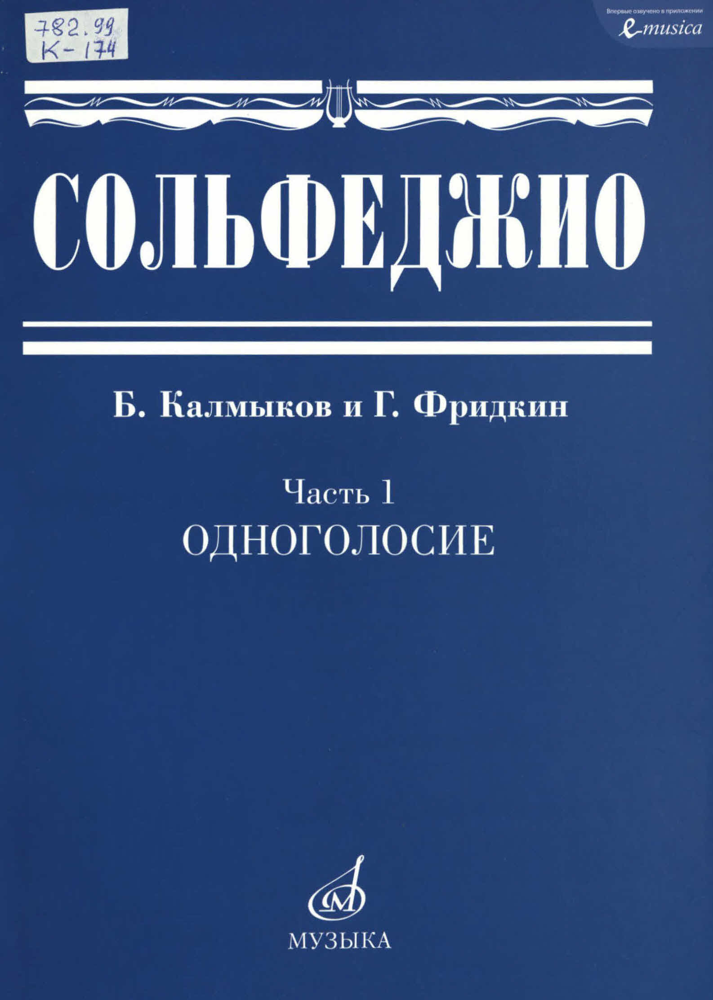
Сольфеджио : [учебное пособие] / Б. Калмыков и Г. Фридкин.Москва : Музыка, cop. 2004
Ч. 1: Одноголосие.174 с.
Абон., Чит. з., Хран. 782.99 К-174
Абон., Чит. з., Хран. 782.99 К-174
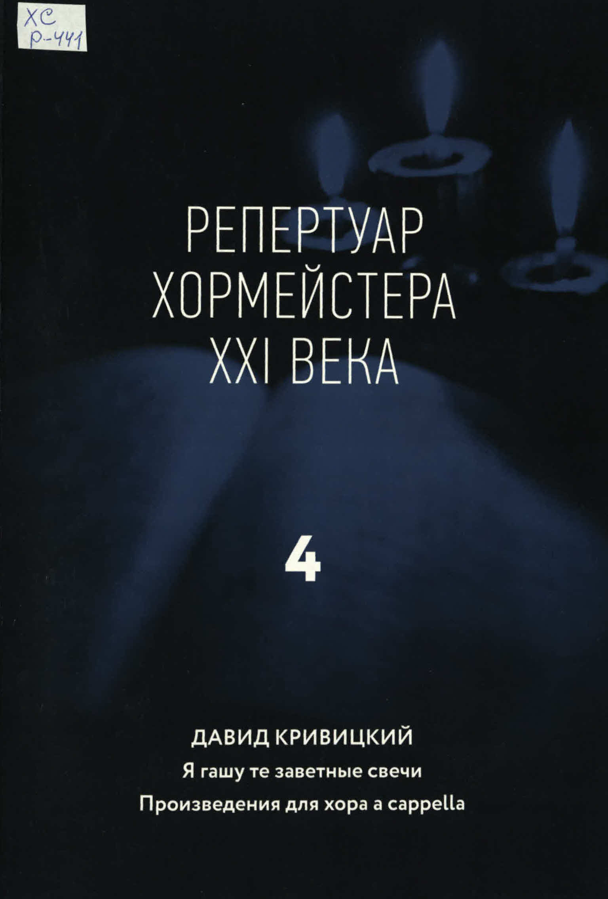
Репертуар хормейстера XXI века / сост. А.В. Соловьев ; Ассоциация народных и хоровых коллективов гильдии академического исполнительства Российского Музыкального Союза.Москва : Изд. "Композитор", 2020-
Вып. 4: Я гашу те заветные свечи : произведения для хора a cappella / Д. Кривицкий ; сост. А.В. Соловьев.2022.98 с. : портр.
Чит. з., Хран. ХС Р-441
Чит. з., Хран. ХС Р-441
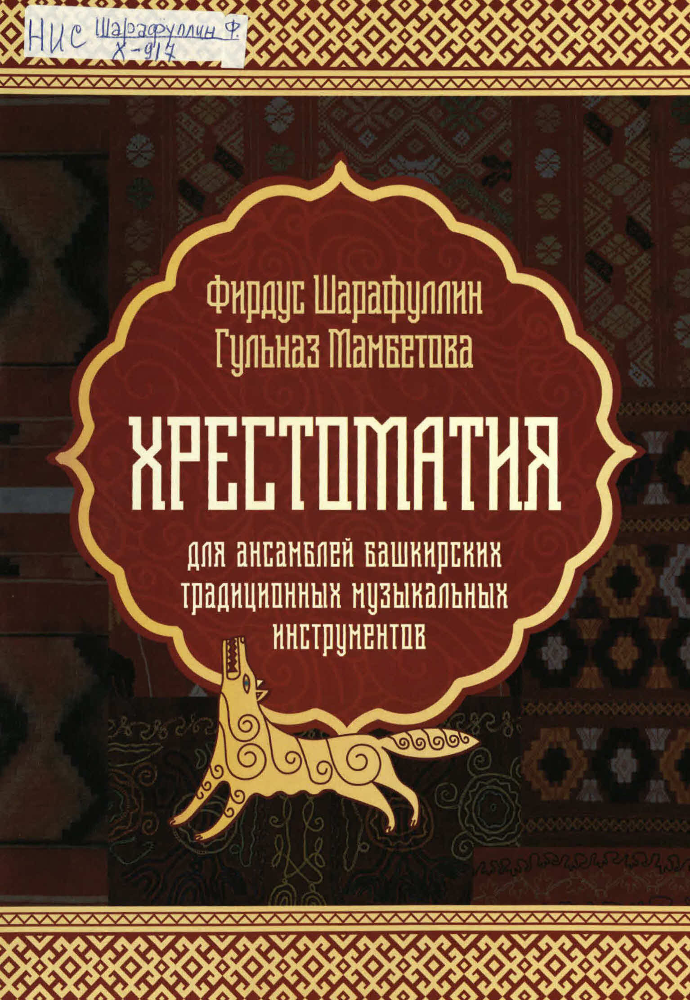
Шарафуллин, Фирдуз Ханафиевич.
Хрестоматия : для ансамблей башкирских традиционных муз. инструментов : учеб.-метод. пособие : [курай, думбыра, кубыз, кыл-кубыз] / Ф.Х. Шарафуллин, Г. Мамбетова; Уфимский гос. ин-т искусств им. Загира Исмагилова.[Партитура].Уфа : "Прокопий", 2022.38 с.
Чит. з., Хран. НИС Х-917
Хрестоматия : для ансамблей башкирских традиционных муз. инструментов : учеб.-метод. пособие : [курай, думбыра, кубыз, кыл-кубыз] / Ф.Х. Шарафуллин, Г. Мамбетова; Уфимский гос. ин-т искусств им. Загира Исмагилова.[Партитура].Уфа : "Прокопий", 2022.38 с.
Чит. з., Хран. НИС Х-917
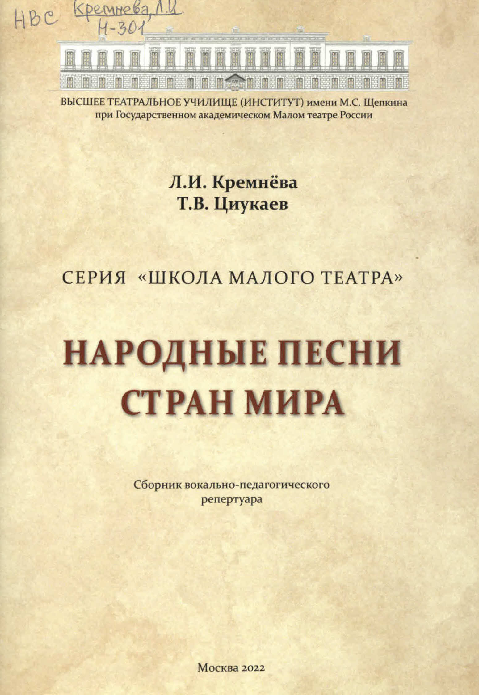
Кремнёва, Людмила Ивановна.
Народные песни стран мира : сборник вокально-педагогического репертуара : [обработки для голоса и фп.] / Л. И. Кремнева, Т. В. Циукаев.Москва : Пробел-2000, 2022.94 с.(Школа Малого театра). С предисл. и метод. рек. от сост.Библиогр.: с. 94 (11 назв.).
Чит. з., Хран. НВС Н-301
Народные песни стран мира : сборник вокально-педагогического репертуара : [обработки для голоса и фп.] / Л. И. Кремнева, Т. В. Циукаев.Москва : Пробел-2000, 2022.94 с.(Школа Малого театра). С предисл. и метод. рек. от сост.Библиогр.: с. 94 (11 назв.).
Чит. з., Хран. НВС Н-301
 Полторацкий, Виктор Александрович.
Полторацкий, Виктор Александрович.Соната : для альта и фп. op. 12 : (1965) / В. Полторацкий; ред. партии фп. Л. Полторацкая.Москва : Композитор, 2022.21 c., 1 парт. (7 с.)
Чит. з., Хран. А 12
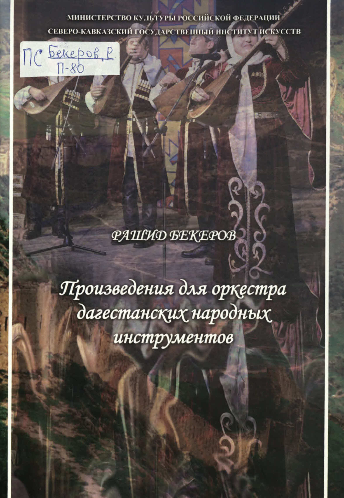
Бекеров, Рашид Чагирович.
Произведения для оркестра дагестанских народных инструментов / Рашид Бекеров ; исполн. ред. В.В. Лопатина ; Северо-Кавказский гос. ин-т искусств.Партитура.Нальчик : Принт Центр, 2022.29 c. Содерж.: Попурри на темы лезгинских композиторов; Фантазия на темы М. Хадулаева.
Чит. з., Хран. ПС П-80
Произведения для оркестра дагестанских народных инструментов / Рашид Бекеров ; исполн. ред. В.В. Лопатина ; Северо-Кавказский гос. ин-т искусств.Партитура.Нальчик : Принт Центр, 2022.29 c. Содерж.: Попурри на темы лезгинских композиторов; Фантазия на темы М. Хадулаева.
Чит. з., Хран. ПС П-80
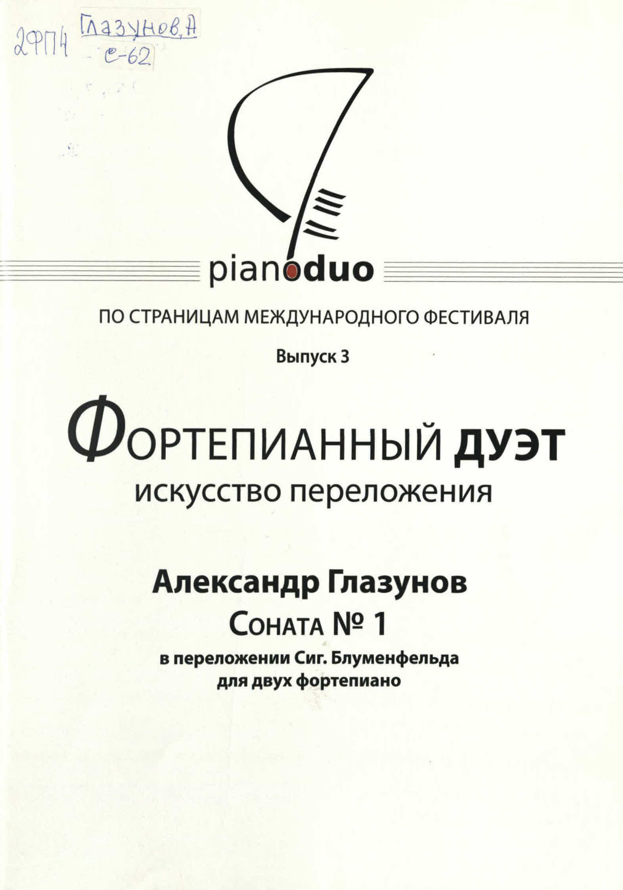
Фортепианный дуэт. Искусство переложения : А. К. Глазунов. Соната № 1 в переложении Сиг. Блуменфельда для двух фортепиано : учебное пособие по дисциплине "Фортепианный ансамбль" / ред.-сост. [и авт. предисл.] С.В. Синцова; Петрозав. гос. консерватория им. А.К. Глазунова.Петрозаводск : Verso, 1922.68 с.(Piano duo : по страницам международного фестиваля ; вып. 3).
Чит. з., Хран. 2ФП4 С-62
Чит. з., Хран. 2ФП4 С-62
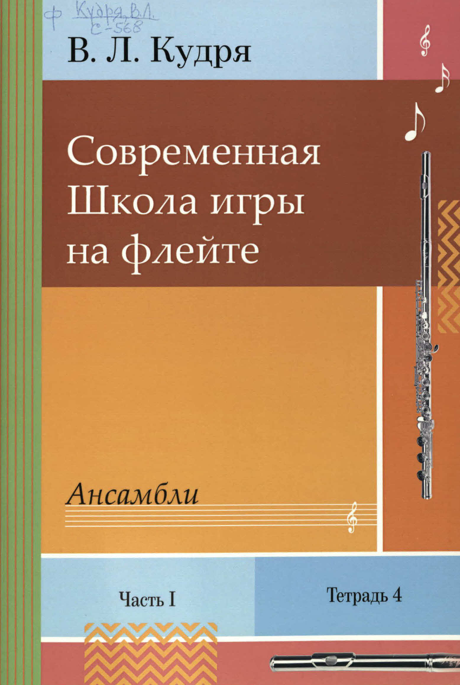
Кудря , Владимир Л.
Современная школа игры на флейте / В.Л. Кудря.Москва : ИПО "У Никитских ворот", 2019 - Ф С-568 Ч. 1, тетр. 4: Ансамбли : для флейты и фортепиано / в аранжировках и обработках В. Кудри.2019.23 с., 3 парт. (2, 6, 7 с.)
Хран., Чит. з. Ф С-568
Современная школа игры на флейте / В.Л. Кудря.Москва : ИПО "У Никитских ворот", 2019 - Ф С-568 Ч. 1, тетр. 4: Ансамбли : для флейты и фортепиано / в аранжировках и обработках В. Кудри.2019.23 с., 3 парт. (2, 6, 7 с.)
Хран., Чит. з. Ф С-568
 Кудря , Владимир Л.
Кудря , Владимир Л.Современная школа игры на флейте / В.Л. Кудря.Москва : ИПО "У Никитских ворот", 2019 - Ф С-568 Ч. 1, тетр. 3: Пьесы : для флейты и фортепиано / в аранжировках и обработках В. Кудри.2019.30 с., 1 парт. (11 с.)
Хран., Чит. з. Ф С-568
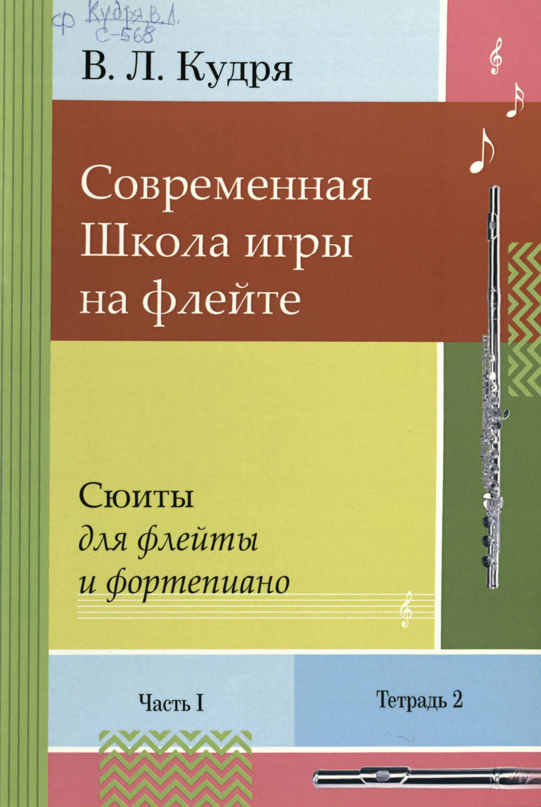
Кудря , Владимир Л.
Современная школа игры на флейте / В.Л. Кудря.Москва : ИПО "У Никитских ворот", 2019 - Ф С-568 Ч. 1, тетр. 2: Сюиты : для флейты и фортепиано / в редакции В. Кудри.2019.20 с., 1 парт. (8 с.)
Хран., Чит. з. Ф С-568
Современная школа игры на флейте / В.Л. Кудря.Москва : ИПО "У Никитских ворот", 2019 - Ф С-568 Ч. 1, тетр. 2: Сюиты : для флейты и фортепиано / в редакции В. Кудри.2019.20 с., 1 парт. (8 с.)
Хран., Чит. з. Ф С-568
 Дружинин, Федор Серафимович.
Дружинин, Федор Серафимович.Сочинения / Ф.С. Дружинин; ред. Ю.А. Тканов.Москва : Греко-латинский каб. Ю. А. Шичалина (ГЛК), 2022.11 тетр. в 1 футляре На рус. яз.На англ. яз.На тит. с. издательство на англ. яз. СС [Тетр.1]: Сочинения : для альта.2022.32 с.
Чит. з., Абон. СС 1
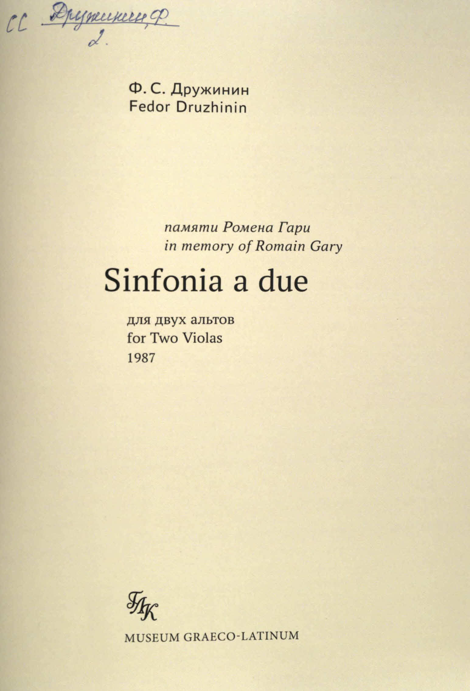
Дружинин, Федор Серафимович.
Сочинения / Ф.С. Дружинин; ред. Ю.А. Тканов.Москва : Греко-латинский каб. Ю. А. Шичалина (ГЛК), 2022.11 тетр. в 1 футляре На рус. яз.На англ. яз.На тит. с. издательство на англ. яз. СС [Тетр.2]: Sinfonia a due : для двух альтов : 1987.2022.40 с., 2 пар. (15, 17 с.)
Чит. з., Абон. СС 2
Сочинения / Ф.С. Дружинин; ред. Ю.А. Тканов.Москва : Греко-латинский каб. Ю. А. Шичалина (ГЛК), 2022.11 тетр. в 1 футляре На рус. яз.На англ. яз.На тит. с. издательство на англ. яз. СС [Тетр.2]: Sinfonia a due : для двух альтов : 1987.2022.40 с., 2 пар. (15, 17 с.)
Чит. з., Абон. СС 2
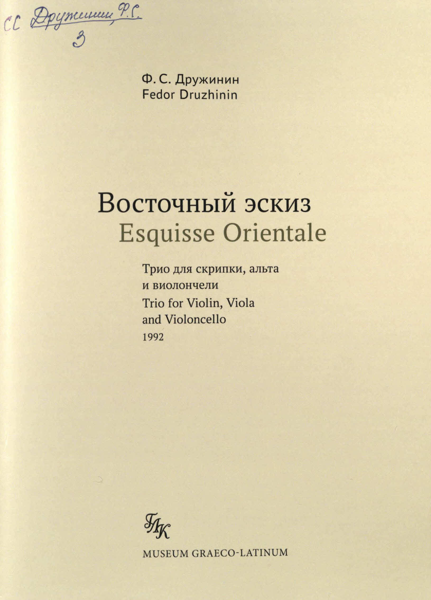
Дружинин, Федор Серафимович.
Сочинения / Ф.С. Дружинин; ред. Ю.А. Тканов.Москва : Греко-латинский каб. Ю. А. Шичалина (ГЛК), 2022.11 тетр. в 1 футляре На рус. яз.На англ. яз.На тит. с. издательство на англ. яз. СС [Тетр.3]: Восточный эскиз : трио : для скрипки, альта и виолончели : 1992.2022.39 с., 3 пар. (16, 14, 12 с.)
Чит. з., Абон. СС 3
Сочинения / Ф.С. Дружинин; ред. Ю.А. Тканов.Москва : Греко-латинский каб. Ю. А. Шичалина (ГЛК), 2022.11 тетр. в 1 футляре На рус. яз.На англ. яз.На тит. с. издательство на англ. яз. СС [Тетр.3]: Восточный эскиз : трио : для скрипки, альта и виолончели : 1992.2022.39 с., 3 пар. (16, 14, 12 с.)
Чит. з., Абон. СС 3
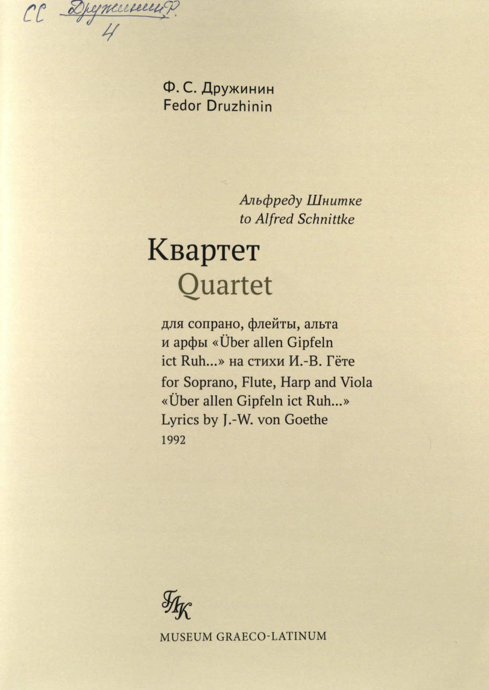
Дружинин, Федор Серафимович.
Сочинения / Ф.С. Дружинин; ред. Ю.А. Тканов.Москва : Греко-латинский каб. Ю. А. Шичалина (ГЛК), 2022.11 тетр. в 1 футляре На рус. яз.На англ. яз.На тит. с. издательство на англ. яз. СС [Тетр.4]: Квартет : " Uber allen Gipfeln ict Ruh" : для сопрано, флейты, альта и арфы : 1992 / на стихи И.-В. Гете.2022.24 с., 3 пар. (7, 4, 4 с.)
Чит. з., Абон. СС 4
Сочинения / Ф.С. Дружинин; ред. Ю.А. Тканов.Москва : Греко-латинский каб. Ю. А. Шичалина (ГЛК), 2022.11 тетр. в 1 футляре На рус. яз.На англ. яз.На тит. с. издательство на англ. яз. СС [Тетр.4]: Квартет : " Uber allen Gipfeln ict Ruh" : для сопрано, флейты, альта и арфы : 1992 / на стихи И.-В. Гете.2022.24 с., 3 пар. (7, 4, 4 с.)
Чит. з., Абон. СС 4
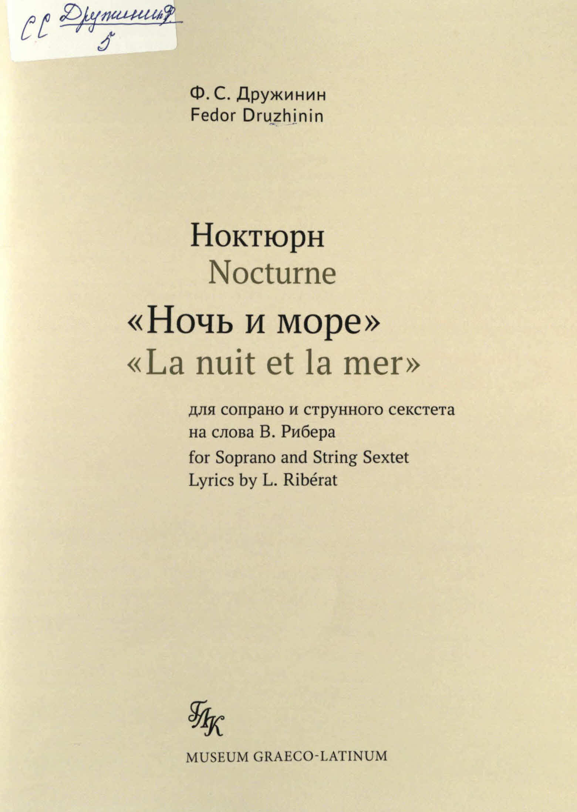
Дружинин, Федор Серафимович.
Сочинения / Ф.С. Дружинин; ред. Ю.А. Тканов.Москва : Греко-латинский каб. Ю. А. Шичалина (ГЛК), 2022.11 тетр. в 1 футляре На рус. яз.На англ. яз.На тит. с. издательство на англ. яз. СС [Тетр.5]: Ноктюрн : "Ночь и море" : для сопрано и струнного секстета : 1988 / на слова В. Рибера.2022.23 с., 7 пар. (7, 7, 7, 7, 7, 7, 7 с.)
Чит. з., Абон. СС 5
Сочинения / Ф.С. Дружинин; ред. Ю.А. Тканов.Москва : Греко-латинский каб. Ю. А. Шичалина (ГЛК), 2022.11 тетр. в 1 футляре На рус. яз.На англ. яз.На тит. с. издательство на англ. яз. СС [Тетр.5]: Ноктюрн : "Ночь и море" : для сопрано и струнного секстета : 1988 / на слова В. Рибера.2022.23 с., 7 пар. (7, 7, 7, 7, 7, 7, 7 с.)
Чит. з., Абон. СС 5
 Дружинин, Федор Серафимович.
Дружинин, Федор Серафимович. Сочинения / Ф.С. Дружинин; ред. Ю.А. Тканов.Москва : Греко-латинский каб. Ю. А. Шичалина (ГЛК), 2022.11 тетр. в 1 футляре На рус. яз.На англ. яз.На тит. с. издательство на англ. яз. СС [Тетр.6]: Детские песни : [для голоса с фортепиано] : 1977 / на стихи Э. Бабаева.2022.27 с.
Чит. з., Абон. СС 6
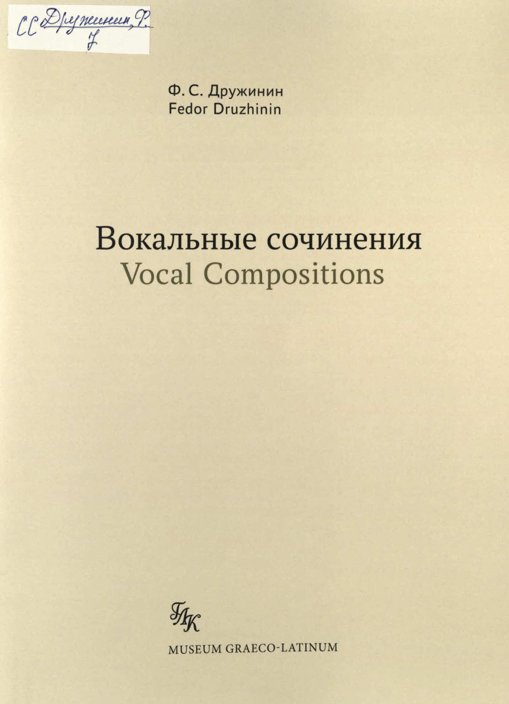
Дружинин, Федор Серафимович.
Сочинения / Ф.С. Дружинин; ред. Ю.А. Тканов.Москва : Греко-латинский каб. Ю. А. Шичалина (ГЛК), 2022.11 тетр. в 1 футляре На рус. яз.На англ. яз.На тит. с. издательство на англ. яз. СС [Тетр.7]: Вокальные сочинения.2022.19 с.
Чит. з., Абон. СС 7
Сочинения / Ф.С. Дружинин; ред. Ю.А. Тканов.Москва : Греко-латинский каб. Ю. А. Шичалина (ГЛК), 2022.11 тетр. в 1 футляре На рус. яз.На англ. яз.На тит. с. издательство на англ. яз. СС [Тетр.7]: Вокальные сочинения.2022.19 с.
Чит. з., Абон. СС 7
Дружинин, Федор Серафимович.
Сочинения / Ф.С. Дружинин; ред. Ю.А. Тканов.Москва : Греко-латинский каб. Ю. А. Шичалина (ГЛК), 2022.11 тетр. в 1 футляре На рус. яз.На англ. яз.На тит. с. издательство на англ. яз. СС [Тетр.8]: Семь духовных хоров.2022.23 с.
Чит. з., Абон. СС 8
Сочинения / Ф.С. Дружинин; ред. Ю.А. Тканов.Москва : Греко-латинский каб. Ю. А. Шичалина (ГЛК), 2022.11 тетр. в 1 футляре На рус. яз.На англ. яз.На тит. с. издательство на англ. яз. СС [Тетр.8]: Семь духовных хоров.2022.23 с.
Чит. з., Абон. СС 8
Дружинин, Федор Серафимович.
Сочинения / Ф.С. Дружинин; ред. Ю.А. Тканов.Москва : Греко-латинский каб. Ю. А. Шичалина (ГЛК), 2022.11 тетр. в 1 футляре На рус. яз.На англ. яз.На тит. с. издательство на англ. яз. СС [Тетр.9]: Фантазия памяти Вадима Борисовского : для альта и фортепиано.2022.19 с., 1парт. (7 с.)
Чит. з., Абон. СС 9
Сочинения / Ф.С. Дружинин; ред. Ю.А. Тканов.Москва : Греко-латинский каб. Ю. А. Шичалина (ГЛК), 2022.11 тетр. в 1 футляре На рус. яз.На англ. яз.На тит. с. издательство на англ. яз. СС [Тетр.9]: Фантазия памяти Вадима Борисовского : для альта и фортепиано.2022.19 с., 1парт. (7 с.)
Чит. з., Абон. СС 9
Дружинин, Федор Серафимович.
Сочинения / Ф.С. Дружинин; ред. Ю.А. Тканов.Москва : Греко-латинский каб. Ю. А. Шичалина (ГЛК), 2022.11 тетр. в 1 футляре На рус. яз.На англ. яз.На тит. с. издательство на англ. яз. СС [Тетр.10]: Фантазия памяти Вадима Борисовского : для альта с оркестром.2022.27 с., 8 парт. (7, 4, 4, 4, 6, 6, 4, 4 с.)
Чит. з., Абон. СС 10
Сочинения / Ф.С. Дружинин; ред. Ю.А. Тканов.Москва : Греко-латинский каб. Ю. А. Шичалина (ГЛК), 2022.11 тетр. в 1 футляре На рус. яз.На англ. яз.На тит. с. издательство на англ. яз. СС [Тетр.10]: Фантазия памяти Вадима Борисовского : для альта с оркестром.2022.27 с., 8 парт. (7, 4, 4, 4, 6, 6, 4, 4 с.)
Чит. з., Абон. СС 10
Дружинин, Федор Серафимович.
Сочинения / Ф.С. Дружинин; ред. Ю.А. Тканов.Москва : Греко-латинский каб. Ю. А. Шичалина (ГЛК), 2022.11 тетр. в 1 футляре На рус. яз.На англ. яз.На тит. с. издательство на англ. яз. СС [Тетр.11]: Обработки и каденции : [для альта и фортепиано].2022.32 с., 1 парт. (20 с.)
Чит. з., Абон. СС 11
Сочинения / Ф.С. Дружинин; ред. Ю.А. Тканов.Москва : Греко-латинский каб. Ю. А. Шичалина (ГЛК), 2022.11 тетр. в 1 футляре На рус. яз.На англ. яз.На тит. с. издательство на англ. яз. СС [Тетр.11]: Обработки и каденции : [для альта и фортепиано].2022.32 с., 1 парт. (20 с.)
Чит. з., Абон. СС 11
Март 2023
Читальный зал
Книги
Замятин, Виталий Вадимович.
Проблема анализа оперы Джорджа Гершвина "Порги и Бесс" в североамериканском музыкознании конца XXначала XXI века : монография / Виталий Замятин.Москва : Нобель-пресс; Edinburgh : Lennex Corporation, 2013. - 196 с. Библиогр.: с. 185-196. Чит. з. 785.1 З-269
Проблема анализа оперы Джорджа Гершвина "Порги и Бесс" в североамериканском музыкознании конца XXначала XXI века : монография / Виталий Замятин.Москва : Нобель-пресс; Edinburgh : Lennex Corporation, 2013. - 196 с. Библиогр.: с. 185-196. Чит. з. 785.1 З-269
Кинцлер, Елизавета.
Сергей Васильевич Рахманинов (1873-1943) : биография в стихах, картинах и фотографиях : к 150-летию со дня рождения великого композитора / Елизавета Кинцлер.Москва : "Сам полиграфист", 2022.79 с. : ил., портр., цв. ил. Авт. указан на обл.Предисл. от автора. Чит. з. 785.1 К-417
Сергей Васильевич Рахманинов (1873-1943) : биография в стихах, картинах и фотографиях : к 150-летию со дня рождения великого композитора / Елизавета Кинцлер.Москва : "Сам полиграфист", 2022.79 с. : ил., портр., цв. ил. Авт. указан на обл.Предисл. от автора. Чит. з. 785.1 К-417
Дмитриенко, Татьяна Ивановна.
Совершенствование приемов звукоизвлечения на струнных инструментах в процессе исполнительской практики в камерном оркестре : учебно-методическое пособие / Т. И. Дмитриенко; "Краснодарский государственный институт культуры".Краснодар : КГИК, 2022.62 с. : нот. Библиогр.: с. 60-62 (28 назв.). Чит. з. 781.55 Д-536
Совершенствование приемов звукоизвлечения на струнных инструментах в процессе исполнительской практики в камерном оркестре : учебно-методическое пособие / Т. И. Дмитриенко; "Краснодарский государственный институт культуры".Краснодар : КГИК, 2022.62 с. : нот. Библиогр.: с. 60-62 (28 назв.). Чит. з. 781.55 Д-536
Джамалханова, Лалита Асламбековна.
Введение в основы исследовательской деятельности педагога-музыканта : учебное пособие / Л. А. Джамалханова; Министерство просвещения Российской Федерации, Российский новый университет.Москва : Издательство Российского нового университета, 2022.218 с. : ил. Библиогр.: с. 159-175.Прил.: с. 176-215. Чит. з. 789.29 Д-40
Введение в основы исследовательской деятельности педагога-музыканта : учебное пособие / Л. А. Джамалханова; Министерство просвещения Российской Федерации, Российский новый университет.Москва : Издательство Российского нового университета, 2022.218 с. : ил. Библиогр.: с. 159-175.Прил.: с. 176-215. Чит. з. 789.29 Д-40
Скрипкин, Дмитрий Леонидович.
Теория музыкальной информатики : [монография] / Д. Скрипкин.Москва : ОнтоПринт, 2022.173 с. : ил. Библиогр.: с. 167-172 (94 назв.).Прил.: с. 173. Чит. з. 781.61 С-454
Теория музыкальной информатики : [монография] / Д. Скрипкин.Москва : ОнтоПринт, 2022.173 с. : ил. Библиогр.: с. 167-172 (94 назв.).Прил.: с. 173. Чит. з. 781.61 С-454
Ремизова, Эмилия Евгеньевна.
Сольфеджио 2.0 : тесты для самопроверки с ответами и шпаргалками ; тесты для самопроверки с ключами / Э. Е. Ремизова.Москва : АСТ, 2022.59, [2] с. : ил., нот.(Музыкальная школа). Словарь муз. терминов: с. 56-60. Чит. з. 782.99 Р-38, 789.3 Р-38
Сольфеджио 2.0 : тесты для самопроверки с ответами и шпаргалками ; тесты для самопроверки с ключами / Э. Е. Ремизова.Москва : АСТ, 2022.59, [2] с. : ил., нот.(Музыкальная школа). Словарь муз. терминов: с. 56-60. Чит. з. 782.99 Р-38, 789.3 Р-38
Булатова, Ольга Рафаэльевна.
Работа над штриховой техникой в процессе прохождения педагогической практики : учебно-методическое пособие / О. Р. Булатова; "Краснодарский государственный институт культуры".Краснодар : КГИК, 2022.59 с. : нот. С предисл. и закл.Библиогр.: с. 58-59. Чит. з. 781.532 Б-907
Работа над штриховой техникой в процессе прохождения педагогической практики : учебно-методическое пособие / О. Р. Булатова; "Краснодарский государственный институт культуры".Краснодар : КГИК, 2022.59 с. : нот. С предисл. и закл.Библиогр.: с. 58-59. Чит. з. 781.532 Б-907
Герасимова, Софья Николаевна.
Современное фортепианное искусство : учебное пособие / С. Н. Герасимова; "Краснодарский государственный институт культуры", - Краснодар : КГИК, 2022.65 с. : портр, нот. Библиогр. в конце тем. Чит. з. 781.53 Г-371
Современное фортепианное искусство : учебное пособие / С. Н. Герасимова; "Краснодарский государственный институт культуры", - Краснодар : КГИК, 2022.65 с. : портр, нот. Библиогр. в конце тем. Чит. з. 781.53 Г-371
Пиджоян, Лариса Анатольевна.
Методика обучения игре на музыкальном инструменте : учебно-методическое пособие / Л. А. Пиджоян ; Елецкий государственный университет имени И. А. Бунина. - Елец : Елецкий гос. ун-т им. И.А. Бунина, 2022.88 с. : ил., нот. Библиогр.: с. 87 (8 назв.). Чит. з. 781.5 П-320, 789.2 П-320
Методика обучения игре на музыкальном инструменте : учебно-методическое пособие / Л. А. Пиджоян ; Елецкий государственный университет имени И. А. Бунина. - Елец : Елецкий гос. ун-т им. И.А. Бунина, 2022.88 с. : ил., нот. Библиогр.: с. 87 (8 назв.). Чит. з. 781.5 П-320, 789.2 П-320
Красильников, Юрий Владимирович.
Особенности развития техники игры на деревянных духовых инструментах в условиях современной исполнительской практики : учебно-методическое пособие / Ю. В. Красильников ; Краснодарский государственный институт культуры.Краснодар : КГИК, 2022.71 с. : ил., нот. С предисл., метод. указ. и закл.Библиогр.: с. 65-67. Чит. з. 781.57 К-78, 783.31 К-78
Особенности развития техники игры на деревянных духовых инструментах в условиях современной исполнительской практики : учебно-методическое пособие / Ю. В. Красильников ; Краснодарский государственный институт культуры.Краснодар : КГИК, 2022.71 с. : ил., нот. С предисл., метод. указ. и закл.Библиогр.: с. 65-67. Чит. з. 781.57 К-78, 783.31 К-78
Глушкова, Надежда Николаевна.
Детские вокальные циклы отечественных композиторов в учебно-образовательном процессе : учебное пособие для студентов консерваторий и вузов искусств / Н. Н. Глушкова; Магнитогорская государственная консерватория, Кафедра академического пения.Казань : Бук, 2022.88 с. : нот. Библиогр.: с. 80.Прил.: с.81-88. Чит. з. 787.1 Г-555
Детские вокальные циклы отечественных композиторов в учебно-образовательном процессе : учебное пособие для студентов консерваторий и вузов искусств / Н. Н. Глушкова; Магнитогорская государственная консерватория, Кафедра академического пения.Казань : Бук, 2022.88 с. : нот. Библиогр.: с. 80.Прил.: с.81-88. Чит. з. 787.1 Г-555
Традиции и новаторство в культуре и искусстве: связь времен : сборник статей по материалам Х Всероссийской
научно-практической конференции 25 марта 2022 года / гл. ред.: Л.В. Саввина; Астраханская государственная
консерватория, Астраханский
колледж культуры и искусств.Астрахань : Издатель Забродина Н.В., 2022.167 с. : нот., портр., ил.
Библиогр. в конце ст.Свед. об авт.: с.164-167.
Чит. з.
780.8 Т-65
Музыка в пространстве медиакультуры : сборник статей по материалам Восьмой Международной
научно-практической конференции, 14 апреля 2021 года / ред. коллегия: Т.Ф. Шак, М.Л. Караманова, А.Н.
Ситалова; Краснодарский государственный институт культуры. -
Краснодар : КГИК, 2021.255 с. : ил., нот.
Библиогр. в конце ст.Предисл. свед. об авт.
Чит. з.
781.6 М-897
Плотникова, Наталья Юрьевна.
Русское партесное многоголосие конца XVIIпервой половины XVIII века : службы Божии Василия Титова : исследование и публикация : [для мужского хора : на 3, 4 и 8 голосов] / Н.Ю. Плотникова; Православный Свято-Тихоновский гуманитарный университет.Москва : Издательство ПСТГУ, 2022.263, [1] c. : нот., ил. Чит. з. 784.2(47)3 П-396, 784.2(47)21 П-396
Русское партесное многоголосие конца XVIIпервой половины XVIII века : службы Божии Василия Титова : исследование и публикация : [для мужского хора : на 3, 4 и 8 голосов] / Н.Ю. Плотникова; Православный Свято-Тихоновский гуманитарный университет.Москва : Издательство ПСТГУ, 2022.263, [1] c. : нот., ил. Чит. з. 784.2(47)3 П-396, 784.2(47)21 П-396
Альтшулер, Марина Сергеевна.
Детский фольклор юго-западных районов Калужской области : учебное пособие / М.С. Альтшулер, Московская консерватория, Научный центр народной музыки им. К.В. Квитки.Москва : НИЦ "Московская консерватория", 2022.56 с., [2] л. ил. : нот., фот., цв. фот.(Материалы НЦНМ им. К.В. Квитки в современных исследованиях). ИБО, Чит. з., Хран., Абон. 788.22 А-589
Детский фольклор юго-западных районов Калужской области : учебное пособие / М.С. Альтшулер, Московская консерватория, Научный центр народной музыки им. К.В. Квитки.Москва : НИЦ "Московская консерватория", 2022.56 с., [2] л. ил. : нот., фот., цв. фот.(Материалы НЦНМ им. К.В. Квитки в современных исследованиях). ИБО, Чит. з., Хран., Абон. 788.22 А-589
Введение в специальность : учебная программа дисциплины Художественное руководство оперно-симфоническим
оркестром и академическим хором. Художественное
руководство академическим хором / разраб. А.В. Антипиным, С.С. Терентьевым; Московская консерватория. -
Москва : НИЦ "Московская
консерватория", 2023.15, [1] с. : таб.
Библиогр.: с. 11-14.
ИБО, Хран., Чит. з., Абон.
780.621.1 В-24
Горбенко, Василий Алексеевич.
Теория и практика ансамблевого и оркестрового исполнительства на медных духовых инструментах : учебное пособие / В.А. Горбенко, Московский государственный институт музыки имени А.Г. Шнитке.Москва : Согласие, 2022.46, [2] с. : нот. Библиогр.: с. 48. 781.57 Г-673, 783.32 Г-673
Теория и практика ансамблевого и оркестрового исполнительства на медных духовых инструментах : учебное пособие / В.А. Горбенко, Московский государственный институт музыки имени А.Г. Шнитке.Москва : Согласие, 2022.46, [2] с. : нот. Библиогр.: с. 48. 781.57 Г-673, 783.32 Г-673
 Щербаков, Евгений Владимирович.
Щербаков, Евгений Владимирович.Задачи по инструментоведению : учебное пособие : уровень высшего образования специалитет ; специальность 53.05.06 Композиция ; форма обучения: очная / Е.В. Щербаков, Московская консерватория. Научно-композиторский факультет, Кафедра инструментовки; [вступ. ст. Кузьма Бодров].[Б. м.] : Music Well.35 с. : нот., ил. Библиогр.: с. 21. Абон., Чит. з. 783 Щ-612
Январь 2023
Читальный зал
Ноты
 Королевский, Владимир Григорьевич.
Симфония N 2 : для большого симфонического оркестра и сопрано / В.Г. Королевский; в симфонии используется
стихотворение И. Бродского "Натюрморт"; Министерство культуры РФ; Саратовская государственная
консерватория им. Л.В. Собинова.Партитура.Саратов : Саратовская гос. консерватория им. Л.В.
Собинова, 2021.102 с.
С предисл.
Королевский, Владимир Григорьевич.
Симфония N 2 : для большого симфонического оркестра и сопрано / В.Г. Королевский; в симфонии используется
стихотворение И. Бродского "Натюрморт"; Министерство культуры РФ; Саратовская государственная
консерватория им. Л.В. Собинова.Партитура.Саратов : Саратовская гос. консерватория им. Л.В.
Собинова, 2021.102 с.
С предисл.
ЧЗ ВП(орг) С-379
 Королевский, Владимир Григорьевич.
Сочинения для струнного квартета / Владимир Королевский; Владимир Мишле; Сергей Полозов; Министерство
культуры РФ; Саратовская государственная консерватория им. Л.В. Собинова.[Партитура].Саратов :
Саратовская гос. консерватория им. Л.В. Собинова, 2012.164 с.
С предисл.
Королевский, Владимир Григорьевич.
Сочинения для струнного квартета / Владимир Королевский; Владимир Мишле; Сергей Полозов; Министерство
культуры РФ; Саратовская государственная консерватория им. Л.В. Собинова.[Партитура].Саратов :
Саратовская гос. консерватория им. Л.В. Собинова, 2012.164 с.
С предисл.IVстПС С-695*
 Королевский, Владимир Григорьевич.
Сонаты для фортепиано / Владимир Королевский; Саратовская государственная консерватория (академия) им.
Л.В. Собинова.[Партитура].Саратов : Саратовская гос. консерватория им. Л.В. Собинова, 2012.78 с.
С предисл.
Королевский, Владимир Григорьевич.
Сонаты для фортепиано / Владимир Королевский; Саратовская государственная консерватория (академия) им.
Л.В. Собинова.[Партитура].Саратов : Саратовская гос. консерватория им. Л.В. Собинова, 2012.78 с.
С предисл.ФПС С-62*
 Бакиханов, Тофик Ахмет Ага оглы.
Концерт N 6 в стиле джаза : для скрипки с симфоническим оркестром / Тофик Бакиханов ; под ред. Зауфа
Абдуллаева; посвящается памяти известного американского композитора Джоржа Гершвина.Партитура.Баку :
Mutercim, 2009.147 с. : портр.
Парал азер., рус., англ.
Бакиханов, Тофик Ахмет Ага оглы.
Концерт N 6 в стиле джаза : для скрипки с симфоническим оркестром / Тофик Бакиханов ; под ред. Зауфа
Абдуллаева; посвящается памяти известного американского композитора Джоржа Гершвина.Партитура.Баку :
Mutercim, 2009.147 с. : портр.
Парал азер., рус., англ.П(скр) К-652*
 Бакиханов, Тофик Ахмет Ага оглы.
Концерт N 6 в стиле джаза : для скрипки с симфоническим оркестром : переложение для скрипки с фортепиано /
Тофик Бакиханов ; редактор партии скрипки Тохфа Бабаева; посвящается памяти известного американского
композитора Джоржа Гершвина.Баку : Mutercim, 2009.55 с., 1 парт. (12 с.) : портр.
Парал азер., рус., англ.
Бакиханов, Тофик Ахмет Ага оглы.
Концерт N 6 в стиле джаза : для скрипки с симфоническим оркестром : переложение для скрипки с фортепиано /
Тофик Бакиханов ; редактор партии скрипки Тохфа Бабаева; посвящается памяти известного американского
композитора Джоржа Гершвина.Баку : Mutercim, 2009.55 с., 1 парт. (12 с.) : портр.
Парал азер., рус., англ.Скр К-652*
 Бакиханов, Тофик Ахмет Ага оглы.
Концерт N 1 : для скрипки с симфоническим оркестром : переложение для скрипки с фортепиано / Тофик
Бакиханов.Баку : [б. и.], 2021.63 с., 1 парт. (21 с.) : портр.
На азерб. яз.С предисл.Описание сост. по переводу на рус. яз.
Бакиханов, Тофик Ахмет Ага оглы.
Концерт N 1 : для скрипки с симфоническим оркестром : переложение для скрипки с фортепиано / Тофик
Бакиханов.Баку : [б. и.], 2021.63 с., 1 парт. (21 с.) : портр.
На азерб. яз.С предисл.Описание сост. по переводу на рус. яз.Скр К-652*
Книги
 Орловский, Сергей Павлович.
Особенности сигнальной звучности проекта "Галерея нотных портретов" композитора С.С. Коренблита :
практико-ориентированная монография.Чебоксары : Среда, 2022.211 с. : ил., портр., табл. + CD. -
(Теоретические основы Фундаментального Песневедения).
Библиогр.: с. 165-167.Прил.: 168-196.Об авторе: с. 197-202.
Орловский, Сергей Павлович.
Особенности сигнальной звучности проекта "Галерея нотных портретов" композитора С.С. Коренблита :
практико-ориентированная монография.Чебоксары : Среда, 2022.211 с. : ил., портр., табл. + CD. -
(Теоретические основы Фундаментального Песневедения).
Библиогр.: с. 165-167.Прил.: 168-196.Об авторе: с. 197-202.785.1 О-666
 Летопись музыкальных фестивалей имени М.И. Глинки : [сборник] / [сост. Е.М. Лаврухина ; ред. Н.В.
Деверилна].Смоленск : Смядынь, 2007
Ч. 2 / сост., авт. вступ. ст. Е.М. Лаврухина; отв. за вып. О.Е. Мальцева.Смоленск : Свиток, 2017.183
с. : ил., фот.
Хроника событий фестивалей (с 1958 по 2017 г.): с. 135-148, участники фестивалей:
с. 149-161, смолянеучастники фестивалей: с. 162-164.
Летопись музыкальных фестивалей имени М.И. Глинки : [сборник] / [сост. Е.М. Лаврухина ; ред. Н.В.
Деверилна].Смоленск : Смядынь, 2007
Ч. 2 / сост., авт. вступ. ст. Е.М. Лаврухина; отв. за вып. О.Е. Мальцева.Смоленск : Свиток, 2017.183
с. : ил., фот.
Хроника событий фестивалей (с 1958 по 2017 г.): с. 135-148, участники фестивалей:
с. 149-161, смолянеучастники фестивалей: с. 162-164.780.5 Л-524
 Метод пения Консерватории музыки, содержащий принципы пения, упражнения для голоса, вокализы, взятые из
лучших современных и старинных произведений = Methode de chant du Conservatoire de Musique : парижский
трактат / вступит. ст. и пер. с фр. Ирины Хрулевой; науч. ред. Ефимова Н.И.Москва:
Композитор, 2022.123, [1] с. : нот.
Метод пения Консерватории музыки, содержащий принципы пения, упражнения для голоса, вокализы, взятые из
лучших современных и старинных произведений = Methode de chant du Conservatoire de Musique : парижский
трактат / вступит. ст. и пер. с фр. Ирины Хрулевой; науч. ред. Ефимова Н.И.Москва:
Композитор, 2022.123, [1] с. : нот.
787.1 М-545
 Музыкальный Петербург : энциклопедический словарь / Рос. ин-т истории искусств ; [отв. ред. А.Л.
Порфирьева ; редкол.: Л.Н. Березовчук и др.].Санкт-Петербург : Композитор, 1996 -
На рус. яз.нем. яз.
Т. 16: XIX век : 1801-1861 : Персоналии: В.Композитор, 2022.380, [3] c., [32] л. ил. : ил.,
нот., факс., табл.
Библиогр. в конце ст.Тит. с. парал. на рус. и англ. яз.
780.1 М-897
Музыкальный Петербург : энциклопедический словарь / Рос. ин-т истории искусств ; [отв. ред. А.Л.
Порфирьева ; редкол.: Л.Н. Березовчук и др.].Санкт-Петербург : Композитор, 1996 -
На рус. яз.нем. яз.
Т. 16: XIX век : 1801-1861 : Персоналии: В.Композитор, 2022.380, [3] c., [32] л. ил. : ил.,
нот., факс., табл.
Библиогр. в конце ст.Тит. с. парал. на рус. и англ. яз.
780.1 М-897
Южак, Киралина Иосифовна.
Полифония и контрапункт : вопросы методологии, истории, теории : [в 2 кн.] / К. Южак.Санкт-Петербург :
Сударыня, 2006.287 с. : нот., ил.
Прил.: примеч.: с. 240-243, им. указ.: c. 244-255, указ. прим. и ил., а также важнейших схем и табл.:
с.276-286, испр.: с. 287.Библиогр.: 256-275.
782.3 Ю-17
Томас, Александр Олегович.
Барочная импровизация в классе клавесина : учебное пособие для студентов высших учебных заведений,
/ А.О. Томас; рец. Л.С. Майковская, Е.В. Бурундуковская.Москва : КнигИздат, 2022.115 с. : нот., ил.
781.53 Т-56, 782.72 Т-56
Костенников, Анатолий Михайлович.
Ансамблево-хоровой комплекс в музыкальном театре Р. Вагнера / А.М. Костенников; науч. ред. Ю.А. Бабинов;
[предисл. Зенкин К.В.].Севастополь : Вебер, 2011.297, [1] с. : портр., ил., цв. ил.
Абон., Чит. з.
785.1 К-72
Артищева, Роза Вениаминовна.
Профессиональная марийская музыка в лицах : композиторы, музыканты-исполнители, мастера музыкальной
педагогики : статьи, заметки, публикации / Р. В. Артищева.Йошкар-Ола : Марийское кн. изд-во, 2013. -
142, [1] с. : портр.
Чит. з.
785.2 А-863
Султанова, Разия.
Поющее слово узбекских обрядов : (опыт лирического исследования) / Разия Султанова.Ташкент : Конжык,
1994.105 с. : нот., ил., цв. ил.
Чит. з.
788.3(5) С-896
Педагог-музыкант в пространстве Мысли и Духа : хрестоматия : к учебному пососбию "Мировоззренческие
убеждения педагога-музыканта" / сост. Б.М. Целковников; отв. ред. Э.Б. Абдуллин; Краснодарский
государственный университет культуры и искусства, Московский педагогический государственный университет. -
Москва : [б. и.], 1998.126 с.
Чит. з.
789.1 П-24
Лакец, Константин.
Феноменальная техника пения русских православных храмовых басов-октавистов и басов-профундо : [брошюра] /
Константин Лакец.Москва : [б. и.], 2002.15 с. : ил.
Чит. з.
787.12 Л-19
Взаимодействие музыки с другими искусствами : межвузовский сборник научных трудов / ред. колл.: Л.П.
Казанцева (отв. ред.), П.С. Волкова (сост.), Е.Р. Сизова (отв. за вып.), О.А. Жукова (отв. за вып.);
Челябинское высшее музыкальное училище (вуз) им. П.И. Чайковского.Челябинск : ЧВМУ (В), 2000.131,
[1] с. : ил., нот.
Чит. з.
781.39 В-406
Войнова, Анна Дмитриевна.
Музыка и пение на факультете общественных профессий : (пособие для преподавателей) / Войнова А.Д.,
Московский ордена трудового красного знамени государственный педагогический институт имени В.И. Ленина. -
Москва : МГПИ им. В.И. Ленина, 1969.100, [1] с. : нот.
Чит. з.
789.2 В-659
Кадыров, Рауф Гафурович.
Музыкальная психология : [учебное пособие] / [Р.Г. Кадыров], Министерство по делам культуры и спорта
Республики Узбекистан, Республиканский методический и информационнный центр, Государственная консерватория
Узбекистана; отв. ред. Р.Ю. Юнусов.Ташкент : Мусика, 2005.82 с.
Чит. з.
781.2 К-138